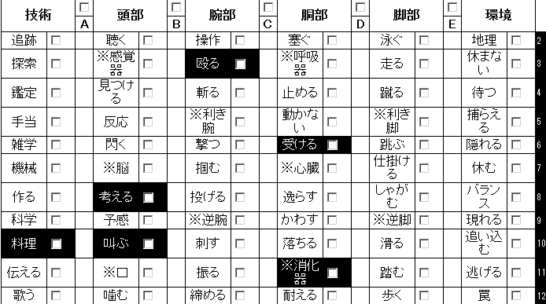
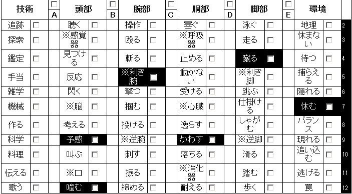
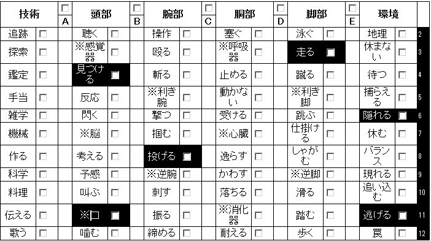
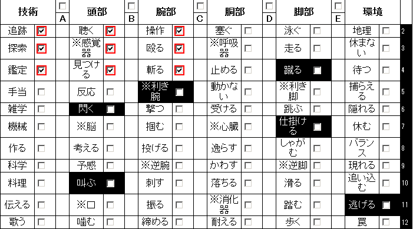

LOST～廃墟の森の子供たち～リプレイ：嵐の濁流
これは、サンプルシナリオ2を遊んだ風景のリプレイログです。作成中のデータのため、最新のデータと矛盾することがあります。
ある夜。ネットの海の片隅で
ある夜、CGIチャットに集まったテストプレイヤーの皆さん。
- GM：
- こんばんはー。今日はよろしくお願いします。
- プレイヤー1：
- よろしくお願いします。 どれだけお手伝いできるか分かりませんが精いっぱい
- プレイヤー2：
- よろしくお願いします
- プレイヤー3：
- よろしくお願いいたします。 がんばるよ！
- ルルブ
- ルールブックの略。
- GM：
-
ルルブの順番どおりにキャラメイクからいきましょう。
まずは、キャラクターが所属するキャンプの作成です。キャンプの名前とか、外観は自由です。
学校跡でも、公民館あとでも。
- 最低限の施設
- 「雨漏り屋根」「隙間風の壁」「水場」「食料庫」「小さな物置倉庫」。
- プレイヤー1：
- 最低限の施設はすでにあって、
追加設備表の結果で１つもらえるんでしたよね。
- GM：
- はい、そうです。1d6を振ってみてくださいな。
- プレイヤー1：
- はやいものがちじゃああああああああああ
（ころころ）１。商人！
- 商人
- キャンプフェイズに訪ねると買い物ができる。このゲームでは買い物できる機会は貴重。
- GM：
- では、あなた方のキャンプには商人がいることになりました。
商人さんはどんな子にしますか。名前とか、年齢とか。
- プレイヤー2：
- トネリコ
- プレイヤー1：
- トネリコ：「ちゃんちゃい」 ３つ。
- GM：
- じゃあそれで。 キャンプ名はどうします？
- ちゃんちゃい
-
そういうことになった。5年前に流行ったウイルスのせいで、年齢はあてにならない世界である。
3歳以下の赤ん坊だけで構成されたキャンプもあるとか。リーダーの名前ははじめちゃん。
- プレイヤー1：
- 奇想天外爆裂爆走ストッパー
- プレイヤー3：
- 廃バスみたいなのかｗ
- プレイヤー1：
- ノリで廃棄されたバスがアジトになりそうですよ。どうしましょう。
- プレイヤー2：
- いいと思います
- プレイヤー1：
- リーダー：｢当面の目標はこのバスを動ける状態にするだね｣
子供Ａ：「タイヤすらないもんね」
Ｂ：「兄貴ッ じゃなかったリーダー 商人を河でひろったー」
リーダー：「もとあったばしょに捨ててきなさい」
- GM：
- では、キャンプがきまったら、キャラクターの作成にはいります。
- 横山優
-
プレイヤーの1人には事前にキャラを用意してもらっている。
ルールをある程度知ってもらっているプレイヤーがいるとサポートしてもらえてありがたい。
- 横山優：
- 「 へーい 」
- GM：
-
まずは、クラスを選びます。 クラスはキャラクターの立ち位置とか性質を表したもので、
１つまたは2つ選びます。クラスが1つのみの場合、後でアビリティが1つ多く取得出来ます。
- 横山優：
- 「 ホープ×スカウトでげす 」
- ホープ
- 残された人々の希望であることを表すクラス。
- GM：
- あと、追加データにショウニン、ヤセイジ、カイヌシを追加しました。ちょっとトリッキーなクラスですが、使ってみたいならばテストにもなるのでどんとこいです。
- プレイヤー2：
- ほほう折角だからヤセイジで行こう
- スカウト
- 偵察や捜索に長けたクラス。
- プレイヤー3：
- ではビッグなママで(・ω・)
- GM：
- クラスきまったら、特技の取得です。
特技表から６つ選んで取得できます。
アビリティや武器によって必要な特技が変わるので、ここは特技表を眺めるくらいにして、
アビリティの取得にいきましょう。
- ショウニン
- 道具を扱うことに長けたクラス。
紛らわしいと言われたので後にアキンドに名前が変わった。
- 横山優：
- 「 僕の武器がスリングで、
これでダメージを与えるための指定特技に《撃つ》が必要みたいな感じやねー 」
- GM：
- アビリティは、クラスが２つのキャラクターは３つまでとれます。
- 横山優：
- 「 やけどクラスが１つやったらアビリティ４つ取れたりする。わぁお贅沢ぅ！ 」
- ヤセイジ
- 獣のように荒々しいヒトやケモノそのものを表すクラス。
- プレイヤー3：
- これ、汎用からとクラスから、で合わせて３つなのね。
- プレイヤー1：
- 汎用の【武器攻撃：《殴る》】 ＋ ビッグの【鉄拳】を組み合わせれば 命中＋５ ダメージ＋１ とかになるんですかこれ。
- カイヌシ
- 獣使い。食料を消費して使うアビリティが特徴
- GM：
-
攻撃アビリティは２つ組み合わせられないです。
補助アビリティは、1回の判定に1つだけ組み合わせることができます。
そんなこんなでキャラクターメイクの時間を小一時間。
- ビッグ
- デカァイ、説明不要！
キャラクター紹介
で、こんな面子になりました。
- ママ
- 台所のヌシだったりする皆の支えになっているクラス。
- GM：
- いい時間になってきたので、そろそろ自己紹介お願いします。
- プレイヤー1：
- では２ｄ６で 低い方から自己紹介しましょうか、てい。 （ころころ）
- 一同：
- （ころころ）
- 天宮桃子：
- 「え・・・あれ？ さ、最初！？」
- 鉄拳
- ビッグの攻撃アビリティ。命中判定にプラス3、ダメージ1点。
- 商人トネリコ：
- 「 おら、はやく自己紹介するですます 」にやにや
- 天宮桃子：
- 「え、ええと・・・ 天宮桃子（あめみやももこ）、１１歳です。特技は、お料理と・・・空手を少々」 （キャラシートを提出）
- 怪力
- ビッグの常駐アビリティ。白兵攻撃のダメージプラス1点。
| 名前 | 天宮桃子 | 性別 | 女 | 年齢 | 11 |
|---|
| クラス | ビッグ、ママ |
|---|
| 特技 | 《叫ぶ》《考える》《殴る》《料理》《受ける》《※消化器》 |
|---|
| アビリティ | 【鉄拳】【怪力】【激励】 |
|---|
| 体力/基準値 | 10/5 | 気力/基準値 | 10/10 | 所持限界 | 5 |
|---|
| 装備 | [胴部：レザー] |
|---|
| 所持品 | コカの葉×2、リュックサック（毛布） |
|---|
- 激励
- ママの支援アビリティ。目標の【気力】を3点増加させる。
- 天宮桃子：
- 「えっと、それと・・・ なぜだかよくママって呼ばれます。 よろしくお願いします」ぺこり。 だぷるん。
- GM：
- だぷるん！ こ、この擬音は。
- だぷるん
-
ダプルン。初夏にたわわに果実を実らせる落葉小高木。実には鉄分が豊富に含まれる。
- 犬神雄二：
- 鈍器が２つ。
- 天宮桃子：
- 防具ともいう。
- 商人トネリコ：
- 「 私も耳たぶなら負けていません 」
- GM：
- （ぷるぷるぷる）＞みみたぶ
- 天宮桃子：
- （ぷにぷにぷにぷに） ＞みみたぶ
- 商人トネリコ：
- 「 一触り１００Ｊですます 」
| 名前 | 犬神雄二 | 性別 | 男 | 年齢 | 17 |
|---|
| クラス | ヤセイジ |
|---|
| 特技 | 《予感》《噛む》《※利き腕》《蹴る》《かわす》《やすむ》 |
|---|
| アビリティ | 【森の申し子】【抜刀牙】【見切り】【よつあし】 |
|---|
| 体力/基準値 | 10/5 | 気力/基準値 | 10/10 | 所持限界 | 5 |
|---|
| 装備 | |
|---|
| 所持品 | コカの葉、リュックサック（ジャーキー×[5] 、毛布、松明、ロープ ） |
|---|
- 森の申し子
-
ヤセイジの常駐アビリティ。探索フェイズのサイクル開始時に【気力】が増加する。
- 犬神雄二：
- 「ってことで 俺は犬神雄二 歳は17…やべえ最年長くせえ」
- GM：
- 犬神くんは人間ですか。
- 犬神雄二：
- 人間です。
- 抜刀牙
-
ヤセイジの攻撃アビリティ。1d6点の【気力】を消費し同じだけのダメージを与える。
- プレイヤー1：
- ヤセイジってケモノのキャラクターにもなれるんですね。 ケモナー。
- 犬神雄二：
- 「仕草が人間っぽくねえって突っ込みはナシな。
少し前は普通に暮らしてたっちゃ暮らしてたけど食料調達の時に、1人森で逸れて帰らぬ人に…はならなかったんだよなあこれが。
まあ必死で生きるのにあがいた分、目覚めちまったっつーか何つーか、、」
- 見切り
-
汎用の補助アビリティ。組み合わせた回避判定の指定特技を《かわす》にする。
- GM：
- とりあえずネズミ生でいくところから。
- 商人トネリコ：
- 「 これが本当のなまちゅうですます 」
- 犬神雄二：
- 「だれうま。ま、何だかんだで最年長だ。リーダーシップなんてモンねーけど、適当に何とかするさ。」
- よつあし
-
ヤセイジの常駐アビリティ。何も装備していない場合、回避判定にプラス1。ダメージにプラス1。
- 横山優：
- 「 はいはい、ほな。 ダブルユウの片割れにして、奇想天外爆裂爆走ストッパーの青い雷こと横山優でーす。
歳は多分７あたり？ 僕事故あったとき２歳やったから詳しくは知らんのよ 」
- 犬神雄二：
- 「いつの間にそんなのが」
- 天宮桃子：
- 「ええと・・・コンビ芸・・・？」
- 犬神雄二：
- 「…芸 芸なあ。何か考えるか？」
- とんずら
-
スカウトの補助アビリティ。逃走判定に組み合わせることで他のキャラクターも一緒に逃がすことができる。
| 名前 | 横山優 | 性別 | 男 | 年齢 | 7くらい |
|---|
| クラス | ホープ、スカウト |
|---|
| 特技 | 《見つける》《走る》《投げる》《隠れる》《逃げる》《※口》 |
|---|
| アビリティ | 【とんずら】【希望の光】【揺らぐ運命】 |
|---|
| 体力/基準値 | 10/5 | 気力/基準値 | 10/10 | 所持限界 | 5 |
|---|
| 装備 | [右手：スリング] |
|---|
| 所持品 | 火付け道具、リュックサック（ジャーキー×[4] 、ロープ ） |
|---|
- 希望の光
-
ホープの割込みアビリティ。振られたダイス1つの「出目」を1増やす。
- 横山優：
- 「 生まれは西のほうでー、兄貴に連れられてこっち来たんやわ。 あ、兄貴は最近行方不明やねんまじ爆笑。
特にこれと言って得意なこともあらへんけど、面白可笑しく楽しく楽～に生きていかれへんかなぁと思ってますー。 あ、ここに居るんはリーダーがごっつ美人やったから 」
- GM：
- リーダーが美人ということに。
- 揺らぐ運命
-
ホープの割込みアビリティ。判定を振り直す。
- 横山優：
- 「適当に適当なこと言って適当にするんは得意よ。
こんな感じでええんかな？ まあほな最後の零ちゃんにパスしよか。もうパスしてええ？ それともまだ適当にしゃべってよーか？ 」
- 影道零：
- 「ああ。ありがとう。
私はカゲミチ・レイ。 ５年前は……覚えている範囲だと、そうだ。道場で訓練をしていたか」
- キズモノ
-
治らぬキズを負ってもなお生き抜くクラス。
| 名前 | 影道零 | 性別 | 女 | 年齢 | 13 |
|---|
| クラス | キズモノ＜キズ：※感覚器＞／センシ |
|---|
| 特技 | 《閃く》《叫ぶ》《逃げる》《蹴る》《仕掛ける》《利き腕》 |
|---|
| アビリティ | 【銀の腕】【一刀流】【急所狙い】 |
|---|
| 体力/基準値 | 10/5 | 気力/基準値 | 10/10 | 所持限界 | 5 |
|---|
| 装備 | [右手：カタナ] |
|---|
| 所持品 | |
|---|
- センシ
-
戦闘に秀でたクラス。
- 影道零：
- 「騒動で目を負傷してしまい……絶望していた時期もあったけど。周囲の皆が支えてくれたおかげで立ち直れた。
私は、皆に恩返しをしたい。どんな事でもいいから、私にできる事をしたい」 「どうか、よろしくお願いします」深々
- 銀の腕
-
キズモノの常駐アビリティ。＜キズ＞に攻撃が命中した場合、そのダメージを0にする。
- 犬神雄二：
- 「ま、全員が全員、出来る事しねえと生きてけねえや。」
- 影道零：
- 「あ、ゼロでもレイでもどっちでも。呼びやすい方で」
- 横山優：
- 「 ほならタクスティック・コマンダーて呼ぶわ 」
- 一刀流
-
センシの常駐アビリティ。武器を1つだけ装備している場合、与えるダメージが1点増える。
- 天宮桃子：
- （ぺこり、頭下げつつ。 優ちゃんにチョップずびし）
- 横山優：
- 「 知ってる？
桃ちゃんのチョップって岩割れんねんで？ 何が言いたいかと言うとちょう痛い 」
- GM：
- リーダー美人とかいってたけど、どんな子がいいですか。
- 急所狙い
-
センシの補助アビリティ。組み合わせた攻撃は軽減されない。
- 横山優：
- 「 お姉様タイプ！！ ｷﾘｯっとしたお姉様！！！ 」
- 犬神雄二：
- くーるびゅーてぃー！
- 横山優：
- 「 体型はスラー、としててスレンダー！
日に日に成長する桃ちゃんに嫉妬のこもった視線をあげてればええよねっ 」
- 天宮桃子：
- 「り、リーダーは立派な人ですよ！ 嫉妬なんてするわけないじゃないですかっ。
一緒に水浴びすると黒い視線を感じたりなんてしてませんし！」
- 犬神雄二：
- 「してんじゃねえか」
- 横山優：
- 「 おなかすいた。僕ママのおっぱいが飲みたいばぶー 」
- 黒い視線
-
豊満よ、地に這え（タレテモゲロ） 。
武具など不要。真のリーダーは目で殺す。
- 天宮桃子：
- 「えっと・・・ 後でね」
- 犬神雄二：
- 「えっ」
- 横山優：
- 「 え、まじでええん？僕びっくりやわ 」
- 犯罪臭
-
こいつはくせえッー！ だが取り締まる警察はもういない。
- 天宮桃子：
- 「お母さんが恋しいって子はたくさんいるから・・・」
- 横山優：
- 「 まじか、、！くっそあいつら同じ手ぇ使いよってからに。。。！ 」
- 桃子の特技表
- 
- 犬神雄二：
- 「俺がやったら100%犯罪臭だもんなー小学生め。 そうか『小学生』ってのもわかんねえのか、、、」
- 横山優：
- 「 分からんね。いや知ってるけど、経験したことないもん 」
- 雄二の特技表
- 
- GM：
- （リーダーの名前決定ダイスをふっている）
- 横山優：
- 「 せやけどさ、雄の字よ。 」 「 この世界のこと考えたら多少犯罪臭くてもええから子供増やさんとやってられへんやん 」
- 優の特技表
- 
- 犬神雄二：
- 「犯罪臭いにも程があるってんだ。優の字」
- 横山優：
- 「 雄ちゃんは真面目やねー。野生で育ったくせにもっとガッと行きーやガッと！ 」
- 零の特技表
- 
- 犬神雄二：
- 「それによお。もうちょっとこう、体の準備どうこうっていう話もあるんだよ。」
- 横山優：
- 「 僕ななちゃい（７歳） 」ばぶー
- 天宮桃子：
- 「７歳なら仕方ないですもんね・・・」なでなで
- 犬神雄二：
- 「 僕じゅうななちゃい」
- 天宮桃子：
- 「さすがに無理があると思います」にこやか
- GM：
- （４の３４…クールっぽく…リーダーの名前はフユミにしよう）
- 天宮桃子：
- ｢･･･でも、まあどうしてもっていうなら、後で」ふふっ
- 犬神雄二：
- 「、、、、タフだわー超タフだわー」
- フユミ：
- 「アンタら、あいかわらずバカやってるわね。 それより、問題よ。ちょっと来て」 髪をかきあげて、１２歳。スレンダー。リーダー。
- GM：
- ていう感じで、スタートしたいと思います。よろしくおねがいしまーす
- 一同：
- よろしくおねがいしまーす。
キャンプフェイズ
プロローグ
- 横山優：
- 「リーダーに子供できたん？ おめでとう。元気な僕の子産んでな」
- フユミ：
- 「は？ 潰すわよ」（絶対零度の視線）
- 犬神雄二：
- 「やめたげてフユミちゃん これでも大切な子種だから」
- 天宮桃子：
- 「よく分かりませんが暴力はよくないと思います・・・」
- 横山優：
- 「 ７歳の可愛いジョークやん。リーダーやねんから軽く受け流さんとあかんと僕思うけどそれは言わんとごめんなさいって言う僕まじ天使。ごめんなさい 」
- 犬神雄二：
- 「それがななちゃいのセリフかってんだ」
- 横山優：
- 「 そうは言うても僕今までの７歳がどんなんか知らんもん。文句あんねんやったら成長スピードがぐんぐんあるこの世界に言うてーな 」
- この世界に言うて
-
このセカイは間違っているんだ！
思春期。
- 犬神雄二：
- 「、、そうなんだよなー」
- 天宮桃子：
- 「あ、ええと・・・ 何かあったんですか？」
- フユミ：
- 「こっち」 と 案内されます。
- 影道零：
- 「了解した。えっと、ついていく感じ」
- 犬神雄二：
- 「 何かケモノでも出たのかい 」
- 横山優：
- 「 ついに雄ちゃんが暴走したんやね。ビーストモード発動！ 」
- 犬神雄二：
- ﾐ「・ω・ﾐ「
- GM：
- では、案内された先には、学生服の少年が、うなされてますね。 ずぶ濡れになってるので、焚き火の横に寝かせてる。「うっ、水が、うわぁぁ、」とかうなされてます
- 犬神雄二：
- 「……水ぅ？」
- 影道零：
- 「川で溺れたのかな」
- 横山優：
- 「 男かぁ… 」知ってる顔ですか？
- フユミ：
- 「隣のキャンプのカズオよ。
学校跡のね」
隣とは、お付き合いもあるので知ってますね。
農家の息子がいて、田圃作りやってたキャンプで、白いご飯とか、秋にはわけてもらったこともあります。
- 白いご飯
-
大変に貴重。災厄のあった5年前に収穫された米は炊くとべっちょりしてドス黒いような色になる。
米ぬかに含まれる脂質が酸化して発する臭いは汗臭く、精米しても消えはしない。
米作りは難しく、大半のキャンプの畑の作物はサツマイモ、ジャガイモ、カボチャなどである。
作物は以前より生育が早く強くたくましくなっており、子供たちでもなんとか栽培できる。
- 横山優：
- 「 カ、カズオォォォォ！！！ 」おぃおぃ 「 へー、ほんで？ 」けろり
- フユミ：
-
「彼らのキャンプが＜フィールド＞が広がったのに巻き込まれて、水に飲まれたっていって倒れたわ」
- 影道零：
- 「水に飲まれた……何が起きても驚かないけど、さすがに寝耳に水というか」
- 横山優：
- 「 あっはっは、零ちゃんそれ最高 あっはっはっはｗ 」
- 犬神雄二：
- 「もとよりそういう諺だぜ？洪水の」
- 影道零：
- 「とりあえず、お勉強は後にしてっと。こっちまで巻き込まれたら大変」
- 天宮桃子：
- 「ええと、彼以外には・・・？」
- フユミ：
- 「屋上で、水位があがるのに震えているそうよ。 湖みたいになってるみたい。いつ沈むか、分からないって。このままだと、このキャンプまで巻き込まれるかもしれないわね」
- 横山優：
- 「 待てよ、てことはもう米とか食えへんの、？ おのれフィールドめぇえええ！ 」
- 犬神雄二：
- 「 そこはもーちょい人道的な心配しようぜ 」
- 横山優：
- 「 阿呆言いなや、こんな世界になってそんな他人様のことまで心配できるかいな、そんなんただの阿呆やし。１に自分２に仲間３，４がなくて５に自分。これ鉄則やね 」
- 天宮桃子：
- 「でも、一人じゃ生きられないでしょう。 みんなで協力しないといけないの。
特に、何か困った事があったときはね」なでなで
- 横山優：
- 「 やーん、さすがは桃ちゃんやさしいわぁ うん、めっちゃ頼るで、なにがなくても頼るで。僕他力本願大好きやし 」
- 犬神雄二：
- 「で 調査か？救出か？」
- フユミ：
- 「この辺りで、水浸しの＜フィールド＞というと、向こうの川のほう。ドラゴンみたいなヌシがいるっていって、今まで近づかなかったのだけど」
ふう、と一息ついて。
「いつまでも放っておくわけにはいかないみたいね」
- 犬神雄二：
- 「 そいつを何とかしてくる、と」
- 影道零：
- 「なるほど。渡ってくるかもしれないのか」
- フユミ：
- 「ええ。逃げても＜フィールド＞の拡大に巻き込まれるわ。
カズオたちのほうが、体力も人手もあるのに、逃げきれなかったから。
こうなったら、ここまで来る前に、＜ヌシ＞をどうにかするしかないわ」
- 横山優：
- 「 ドラゴンってあれやろ？ パフやろ？ 最後には一人で寂しく入り江で暮らす 」
- 犬神雄二：
- 「 懐かしいなあそれ。よく歌った 」 ぱふっざまじっくどーらーごーん
- 横山優：
- 「 兄貴が好きでよぉ歌ってくれたんよ 」
- フユミ：
- 「……知らないわね、その歌。とにかく、あなたたちの食料の準備をするわ。頼むわよ」
- 天宮桃子：
- 「そのヌシをやっつければ何とかなるかも・・・と。ん、わかりました」
- 犬神雄二：
- 「 OK。何とかしてくっか。」
- 影道零：
- 「了解した。力になろう」
- 横山優：
- 「 よっしゃ！ 行ってらっしゃい雄ちゃん！！！ 」
- 犬神雄二：
- 「何だよ寂しいじゃねえの優ちゃんよお」
- 影道零：
- 「面子的に、優さんも。だね」
- 横山優：
- 「 人間みんな死ぬときは一人らしいで、良い練習やん 」
- フユミ：
- 「うちに、アンタ以上にすばしっこいの、いないの。いってらっしゃい」
- 秘蔵ピンナップ
-
缶にいれてタイヤの下などに埋めてある。
隠し場所は複数あり、冬越しの間に忘れてしまうことも。
そうして消費されなかったものは春になると芽をだす。
- 犬神雄二：
- 「 秘蔵ピンナップも付ける。そいつでどうだ」
- 横山優：
- 「 ひゃっはー、雄ちゃん大好きッ 一生はついてかんけど都合のいい時はお供するで！！
」
- 犬神雄二：
- 「男に一生お供されてもなあ、、、」
- 天宮桃子：
- 「自分でどうにもならないことは頼るしかないですから。 頼りにしてますよ、優くん」
- 影道零：
- 「死ぬ時は一人でも。やっぱり、誰かに看取ってほしいという気もあるにはある。なんという矛盾だ」
- 横山優：
- 「 僕帰ってきたら結婚するんだ…。 」るーるるー。
- リミット
-
リミット以内に＜ヌシ＞の元への道を見つけられないとセッション失敗となる。
- フユミ：
- 「４日もあればたどり着けるはずよ。それまでは、ここは任せて」
ということで、リミットは４サイクルです。
- 影道零：
- 「４日。わかりました」
- 天宮桃子：
- 「タイムリミットは４日・・・ですか。 わかりました」
- 犬神雄二：
- 「オーケイ。それじゃ ”また会おうぜ”」
- 横山優：
- 「それが雄ちゃんの最後の言葉になろうとはこの時誰も思わなかった」
- 天宮桃子：
- 「言ってる側から不穏なことばっか言わないでください；」
- 犬神雄二：
- 「他人のフラグまで立てんじゃねえよ。」
- 横山優：
- 「あえて言いまくったほうが気分ええやん？ そんなことない？ ほならもう言わんわごめんな。
第１級フラグ建築士優ちゃんたぁ僕のことだ！ リーダー、帰ってきたら僕の子供産んでな」
- フユミ：
- 「ナマ言ってんじゃないの」
- 影道零：
- 「下手な鉄砲も数打ちゃ当たる、という諺があってだね。まぁいいか」
- 天宮桃子：
- 「どっちへのツッコミなんでしょうかね・・・」赤く
- 犬神雄二：
- 「ナマだけに いや何でもねえ」
- 影道零：
- 「えっ…… いやいや。深読みしすぎだろ！？」
- 横山優：
- 「 桃ちゃんはえろいわー、零ちゃんスカートめくってええ？ 」
- 影道零：
- 「駄目に決まってるでしょ。それに、さり気なく変なことを聞かない。堂々としても駄目だけど」
- フユミ：
- 「うっさいマセガキども。食料にアンタらの苦手なもの入れるわよ」
- 天宮桃子：
- 「あはは・・・」真っ赤
行動の処理
- 行動の処理
-
【散策表を振る】
【タイプ：支援の特技やアイテムを使う】
【施設（商人：トネリコ）を使う】
のいずれかを1人1つ行える。
- GM：
- プロローグはこんな感じで。
これから、キャンプフェイズの行動の処理になります。
- 商人トネリコ：
- 「 私の出番ですますね 」
- 横山優：
- 支援特技はないし買い物するお金もないし 散策かな。
- 犬神雄二：
- お金は5あるけど とりあえず散策。
- カタナ
-
15J。2W。攻撃力4。指定特技は《斬る》。この武器を使った攻撃でクリティカルするとダメージが1D6増加する。
- 影道零：
- カタナに全額投入したから散策かな。
- 天宮桃子：
- 散策をしようー
- GM：
- では、散策表は1d6を。 ６個じゃやっぱすくないかなー。アイデアがわかぬ脳がくやしい。
- 犬神雄二：
- （ころころ）掘り出し物。（いっころ）1ジャーキーだった。
「お まだこれ食えんじゃねえか」 ごそごそ
- 散策表は1d6
-
この時は6種類しかなかった。アイデアひねり出して今は2D6の表。
- 横山優：
- 「 雄ちゃんが拾い食いしてるーー！身も心も犬になりくさりおったぁぁぁ！ 」屋根からぶらさがって窓から中覗いてる
- 犬神雄二：
- 「食ってねえっつうのまだ！ ワイルドに生きろっつったのは何処のどいつだボケナス！」
- 横山優：
- では散策で。 １ｄ６てい。 （ころころ）・・・なかまがしんだ？
- GM：
- なかまがやられた。今回のヌシ、アラシノドラゴにやられたことがあるみたいです。
セッション中に一度だけ、＜ヌシ＞へのダメージ決定時にダメージを2点増加させることができます。
- 横山優：
- 「 おぉ、そうかそうかそれは災難やったな。僕はあれやわ復讐とか興味ないけど燃えてきたわ。 とか言ってみたけどテンションあがらんなぁ…… 」
- 天宮桃子：
- 「・・・それは・・・お気の毒に」
- 影道零：
- 「仇を討ってやるさ。だから、祈っていてくれ」
- 横山優：
- 「 まあええわ。ヌシ倒して あんなんに負けたんﾌﾟﾌﾟｰｯマジお前ざっこｗｗｗｗ て言うことにするわ 」
墓石に蹴りぶちこんで屋根（定位置）で出発まで昼寝
- フユミ：
- 「……」 ため息を１つ
- 天宮桃子：
- 「あー、また悪戯してもー！！」墓石直しつつ
- 横山優：
- 「 ちゃうねん、この足が悪いねん僕は悪うないねん。このめっ このめっ 」足ぺちぺち
- 犬神雄二：
- 「 任せろ噛みちぎってやる 」 この めっ！
- 天宮桃子：
- 「強めにかじっておいてくださいねー。 あ、歩くのには支障が出ない程度に」
- 横山優：
- 「 桃ちゃんのうらぎりものぉぉーっ うわぁぁん、零ちゃんスカートのなかで泣かせてーっ 」
- GM：
- あー、次の人散策表どうぞ。
- 桃子&零：
- （ころころ×２）同じ目だ。
- GM：
- 桃子と零のは、リミットが１増えるものですね。合計２サイクル増えます。リーダーが食料を多めに用意してくれました。
- 天宮桃子：
- 「すみません、ありがとうございます・・・ ええと、何とかして来ますから。 待ってて下さいね」
- フユミ：
- 「これ、余分にいれておくから。あと、優の好物。１日目にはみせちゃだめよ。どうせ食べ過ぎるから」
- 影道零：
- 「ハハハ。了解した」
- 天宮桃子：
- 「ええ、優くんがうだうだ言い始めた頃に」苦笑しつつ物資受け取り。
- フユミ：
- 「さて、じゃ、いってらっしゃい。 武勇伝、期待してるわね」
片手をひらひらふって、お見送り。 バスの窓からこどもらも手を大きくふっている
- GM：
- というわけで、キャンプフェイズの行動は全員終了。
- 商人トネリコ：
- 「 ・・・どういうことだ。 なぜ私のことに来ないですますか。 」
- 横山優：
- 「 はぁ、＜フィールド＞行くとかまじめんどいわぁ・・・ 僕はそれよりアジトの人口増加問題に一役買いたいねんけどなぁ 」屋根の上でうだうだ
- 犬神雄二：
- 「帰ったら十分励め。潰されても知らん。」
- 影道零：
- 「生きるということ。貪欲だなあ」
- 天宮桃子：
- 「とりあえず、雨漏り直して、食べ物が安定供給できるようにして・・・それからでも」ふむむ
- 犬神雄二：
- 「育児にもうちょっとでも適した環境にしねえとなあ。」
- 天宮桃子：
- 「正直狭いですからねぇ、あのバスも； あまり人が増えすぎるのも考え物ですけどね」
- 影道零：
- 「それに私たちの心も――まだ、子供を育てられるレベルじゃない気がする」
- 横山優：
- 「 ちまっちょいこと言いなや。ほら僕こんなにニヒルでカッコいいし 」
- 天宮桃子：
- 「そんなこと言ってる間はちょっとあれかな・・・て」
- 影道零：
- 「そうだな。さっきからガアガアうるさいから、アヒルみたいだ」少し笑い
- 犬神雄二：
- 「アヒルだったら美味いんだろうけどな」
- 横山優：
- 「 それあひるやん。零ちゃんあとで一緒に文字の勉強する？ 」
- 影道零：
- 「そうだな。全てが終わったら、だ」
- フユミ：
- （ブーメランで落とす）＞屋根の上の優
- 横山優：
- 「 、、、声がでぇへん程度に痛い・・・・ 」
- 天宮桃子：
- （なでなで）
- 横山優：
- 「くっそー、７歳のこんな可愛い可愛い僕を死地に行かせるなんてなんてことやこれは世界の宝を失うんかもしれへんねんで頑張ってくるー」ノシ
- 影道零：
- 「いってくる。精一杯をしてくるからね！」
探索フェイズ
1サイクル目
- GM：
- では、探索フェイズへ以降します。 １サイクル目。
- 影道零：
- 「さて。まず此処か」
- 横山優：
- 「 ・・・。濡れるんやろなぁ 」
- 犬神雄二：
- 「 水も滴る良い男だろ濡れて来い 」
- 天宮桃子：
- 「ちょっとくらいなら水遊びみたいなものだと思いますけど」くす
- GM：
- 道を進んでいくと、じゃぶじゃぶと水没した感じになってます。 遠目に、隣のキャンプがあたところがみえますが、湖になって大きなハスの葉とかがういてる。
- チェックポイント
-
＜ヌシ＞の元に辿り着くまで通らなければならない＜フィールド＞の各中継点のこと。
- 横山優：
- 「 おー、 」見る見る 「 まじで沈んでるっぽいね 」
- 天宮桃子：
- 「こんなに早く拡がってくるものなんですね・・・」じゃぶじゃぶ
- GM：
-
そこを超えてしばらくゆくと、１つめの＜チェックポイント＞にたどり着きます。 水没した電気屋です。ダンボールが売り場にぷかぷか。
- 影道零：
- 「なにか居ないだろうな」ざばざば
- 横山優：
- 「 わー、零ちゃんのスカートを小魚がつついてるぞー 」スカートくいくい
- 犬神雄二：
- 「おおっとアブねえサメっぽい何かだ」 つま先でごす
- 影道零：
- 「いいや、亀だ。出歯亀だ」後ろ足で水ばしゃー
- 横山優：
- 「 がぼがぼっっ 」
- 天宮桃子：
- 「優ちゃん・・・」
- GM：
- そこに一角の生えたサカナがとびかかってきます。 戦闘となります！
- 影道零：
- 「本当に出てきてしまったな」
- GM：
- ３匹いますよ。
- 横山優：
- 「 雄ちゃんがへんなこと言うからほんまにサカナ来たやん！！ 」
- 犬神雄二：
- 「 知るか！言ったことを現実にする能力なんて持ってねえよ！」
- 天宮桃子：
- 「あったら素敵ですけど、いろいろと」
- GM：
- 戦闘では、まず、全員先制判定を行います。これに成功すると、敵より早く動けます。 指定特技は （ころころ）《追い込む／環境10》 です 。
- 犬神雄二：
- 近いのは《休む》 か？
- 影道零：
- 《逃げる》が真下にある感じ
- 横山優：
- 僕も《逃げる》から１マス離れてるので目標６ですね。
- GM：
- この判定に失敗した人は、後攻になります。
- 横山優：
- 《逃げる》ことが得意な人間は、逃げ道をふせぎ＜追いこむ＞ことができるのよっ と言いながら２ｄ６ ていや。 （ころころ）4……失敗しました。
- 犬神雄二：
- 《休む》 そして適切なタイミングを持って攻めに転ずる！ 目標8 （ころころ）失敗。ぐっ と四つん這いになって、気を伺い。
- 影道零：
- （ころころ）成功だ。「逃げながら、隙を見て攻めに転じる」濁った目を見開いて
- 天宮桃子：
- えーと。
- 桃子の特技表
-
- GM：
- 桃子なら、一番近い習得している特技の《消化器》から《追い込む》まで5マス離れているので、代用判定の目標値10です。
- 天宮桃子：
- お腹に力を込めて 目標１０ （ころころ）成功。
- 横山優：
- 「 ちなみに僕が饒舌なんは実はすんごい弱虫小虫やからやったりする。魚怖いよーッ 」
- 犬神雄二：
- 「 とりあえず下がっとけ。魚取りは日課だった」
- GM：
- では、桃子と零が先攻です。 どちらから動いてもいいですよ。
- 天宮桃子：
- 「持って帰れば新しいお料理に出来そうですね」おなかで物事を考える。 追い込むぞ！
- 影道零：
- 「いくぞ。私が捌いてやる！」カタナを使って１匹(仮称Aを)斬る。《利き腕》から《斬る》の代用判定で目標値6。（ころころ）出目8、成功だ。 一刀流で１点追加の５ダメージ
- スペシャル
-
2D6の出目が12だった場合、スペシャルという華麗な成功になる。
マイナス修正で達成値が目標値にとどかなくても、
スペシャルならば自動成功できる。
また、気力が1D6回復し、変調を1つ解除できる。
まあ、そうそう出ませんけど。
- GM：
- 当たったら死んじゃう。ここで、サカナは回避をこころみます。
回避を行うためにまず【気力】を1点消費。
回避判定の指定特技は、零の使った《斬る》になります。
サカナのもってる《泳ぐ》から５マスはなれているので、目標値１０。
ここに零が目標値を上回った分のマイナス修正がつきます。2d6-2で目標値10……スペシャルにかけるしか（ころころ）
命中。ダメージを受けてツノサカナAは倒れました。
- 横山優：
- 「 きゃーっ 零ちゃんカッコいいー！パンツまるみえー！ 」
- 影道零：
- 「こ、この！？」＞白だー
- 白だー
-
高度な暴露。TRPGは皆で協力して物語を作るものだと思い出させてくれる。
- 犬神雄二：
- 「なあ、優。知ってるか？ ここが絶景のポジションだって」
- 横山優：
- 「 雄ちゃんもしかしてその攻撃スタイルになって理由って、、っ 」ﾊｯ
- 天宮桃子：
- 「私も行きますよ・・・ふんっ！」【鉄拳】！ （ころころ）出目は6。修正がプラス3で達成値は9！
- 攻撃スタイル
-
雄二の取得しているアビリティは【よつあし】。
- 横山優：
- 「 うちは女の子の方が強いんやねぇ 僕隅っこのほうで震えててええかな？ 」
- 天宮桃子：
- 【鉄拳】でダメージ1に【怪力】でプラス1。ダメージは2点。
- GM：
- 回避するよ（ころころ）サカナB、倒れました。ぷかー。
- 横山優：
- 「 桃ちゃんちょっと引くくらいすげーっ！ 」
- 影道零：
- 「よし。残るは１匹だ」血を払って
- 天宮桃子：
- 「はいっ」水からざばー、と右手引き抜き
- 防具
-
レザー。5J。2W。胴部分野の「身体部位」に攻撃が命中した時、そのダメージを1点軽減する。
ちなみに胴部分野の身体部位は「※呼吸器」「※心臓」「※消化器」。
- GM：
- では、敵の行動。桃子に攻撃。【体当たり：刺す】＋【鋭角】。あたればダメージ２点 （ころころ）達成値は10。
回避するならペナルティはマイナス３になります。 指定特技は《刺す》。桃子は防具きてるから命中部位は（ころころ）※呼吸器。胴部なので、ダメージ1点軽減ですね。
- 横山優：
- 回避してもいいし、しなくてもいいんですね。 回避すると気力を使用するってことは。
- 天宮桃子：
- では回避しない方向でいってみましょう
- GM：
- では、【体力】が1点減少します。【体力】が０になって、まだダメージがあると、部位ダメージになります。
- 横山優：
- 「 桃ちゃんの服に穴がっ いいぞもっとやれっ 」
- 天宮桃子：
- 「ん”、っく。 ち、ちょっとだけですし！」 ＞穴
(体力:9 気力:10)
- 影道零：
- 「大事じゃなさそうでよかった」
- 天宮桃子：
- 「かすり傷です、まだいけますよっ」
- GM：
- 桃子の体力が9になったところで、後攻のターン
- 横山優：
- 「 雄ちゃんに譲るわ 僕は基本動くんだるいし 」
- 犬神雄二：
- 「OKOK 喰い 千切る ！！」
【抜刀牙】 発動 反動どーん （ころころ）1。やさしい。
で、命中判定。《噛む》（ころころ）6。
- GM：
- あたったら、１点。
- 犬神雄二：
- 【よつあし】で更にダメージプラス1ざます。
(体力:10 気力:9)
- 横山優：
- 小石を手でじゃらじゃら 「 たっおせるかな～♪雄ちゃんで倒せるかな～♪ 」
- GM：
- ワンチャンよけてみるかー。《刺す》から目標値９ （ころころ）スペシャル！ 気力が（いっころ）1点回復。使った分が返ってきた。
- 横山優：
- 「 あっはっはっ まだまだアメンボモードは未完成やね 」
- 影道零：
- 「まるで疾風だ」
- スリング
-
3J。1W。攻撃力2。指定特技は《投げる》。装備中、回避判定にプラス1。
- 横山優：
- 「 ほなら僕もがんばりましょか 」じゃらり、
「 よ～いせっと 」
スリングで小石を飛ばす。 特技は《投げる》 当たれば攻撃力２だから ２ダメージなのかな？ てーい。
（ころころ）7で成功。
- GM：
- マイナス２もらって、回避。角で打ち返すよ！（ころころ）だめでした。
- 横山優：
- 「 おー、僕つよいじゃなーーい？ 」
- GM：
- ３匹沈みましたー。あなたたちの勝利です！
- 影道零：
- 「ふぅ……また変なのが来ない内に、やることを済ませよう」
- 犬神雄二：
- 「 だな。めぼしい物資が有ったら接収だ」
- GM：
- ドロップ品判定があります。 倒した人、1D6ふってみそ。
- 横山優：
- 「 そ、そんな大胆。。 」（ぽ）（いっころ）3
- 影道零：
- 「ええい。不埒者め」（いっころ）4。
- 天宮桃子：
- 「ええ、今の内に」うねってる優をだっこしつつ。（いっころ）2。
- GM：
- 2はなにもなし、3、4は生肉(1J、1W、食料)です。
- 犬神雄二：
- にくにく
- 影道零：
- おにくぱーてー
- GM：
- おにくが２つてにはいりました。 魚肉。
- 影道零：
- 「こんなものだろう」
- 天宮桃子：
- （粉微塵になった魚をみつめる）
- 影道零：
- 拳で粉微塵
- 横山優：
- 「 ほな僕が持っとくわ。それでええ？ 別に食べへんし信用してぇな 」
- 犬神雄二：
- 「 OKOK。任せるぜ。」
- 影道零：
- 「そうだ。お願いしよう」つ 生肉
- 横山優：
- （リュックサックにつめる）「 あとお肉１個くらいやったら入るで 桃ちゃんやったら１００分の１ぐらい？ 」
- 天宮桃子：
- 「どういう意味です？」にこにこ
- 横山優：
- 「 え、桃ちゃんむっちむちやん。 絶対僕より体重あるやろ？ まあ、身長的に考えてもあたりまえやけど 」
- 天宮桃子：
- 「５０キロくらいしかないですし・・・」ぶつぶつ
- 電線
-
何処から電気が来ていたのかは謎。
＜フィールド＞では脈絡なく文明の残り香に出会うことがある。
アニメが流れているテレビや、運転手もいないのに動いている電車など。
大抵は＜ヌシ＞を倒し＜フィールド＞が解放されたところで動きを止めるか、
まるで存在していなかったかのように消える。
- GM：
- では、これで遭遇は終了です。 この先、チェックポイントB,Cへの道があります。
切れた電線が水に浸かり、この先の通路を進んでは感電してしまいます。
- 天宮桃子：
- 「電源は・・・この中にあるんでしょうか」 ＞びりびり
- GM：
- 障害：回路切断 突破の特技：《機械/技術7》です。
ここから行動の処理開始としますね。
- 影道零：
- 《機械》はみんな遠くてお手上げ侍。
- GM：
- 代用判定をしたいけれど、習得している特技がどれも指定特技から遠い。そんなとき、GMに指定特技の変更を提案できます。
- 行動の処理
-
【障害の突破】
【探索 探索表を振り、アイテムなどを入手】
【休憩 休憩表をふり、気力を回復】
【支援アイテムやアビリティの使用】
から各自1つ選んで行える。
- 犬神雄二：
- こじつければいいんですね！
- GM：
- 何か理由をつけて、この特技で判定したいです！といってみてください。
ちなみに、最初の機械での判定だと、配電盤を操作して、電気が電線にいかないようにするって感じです。
- 横山優：
- 「 あ、ええこと思い付いた。桃ちゃん桃ちゃん 」
- 天宮桃子：
- 「はい、何でしょう優くん」
- 横山優：
- 「 機械なんてぶん殴れば壊れて止まるやん。 てなわけで、ほい 」配電盤指差す
- 天宮桃子：
- 「・・・ええと。 殴って壊せば止まる、と？；」
- 横山優：
- てなわけで《殴る》でどうにかなりませんか。という具合にこじつければいいんですかね？
- GM：
- だいたいそんな感じですね。配電盤は、電気をわけてるだけなので、《殴る》ではムリです。
このように、GMが断ることもあります。
- 横山優：
- 「 所詮機械なんて最後はどついて壊すんが一番やってリーダーもよぉ言ってるやん。せっかく直したラジオぶっこわすたびに 」
- 天宮桃子：
- 「やめて下さいって言ってるんですけどね・・・」額に手
- 影道零：
- 回路を切断なら《斬る》を使いカタナで破壊したい所。
- GM：
- 電気の通ってる電線を《斬る》で切断するのですね。OKです。
- 天宮桃子：
- 一刀両断だー
- 影道零：
- 「…… ええい。面倒くさい。私が斬る」
- 横山優：
- 「 きゃー零ちゃんカッコいいーっ 考え方がヤバんよヤバんっ そこに痺れる憧れるッ 」
- 天宮桃子：
- 「き、気を付けてくださいね？」
- 影道零：
- 「ではいくぞ」目を一瞬瞑り カッと見開いて《利き腕》から目標値6。 （ころころ）11で成功。
- 犬神雄二：
- カットインが入った。
- 影道零：
- 「やったか」
- 横山優：
- 「 それフラグ 」
- GM：
- すぱん！ では、電線の切断に成功。電柱の上のほうでばちばちいってますが、下のほうはとおれるようになりました。 しゅー
- 影道零：
- 「ふぅ……斬った時に電流が流れてこないかヒヤヒヤしたけど。何とかなったか」
- 天宮桃子：
- 「あ、で、でも・・・」
- 犬神雄二：
- 「やったな」
- 横山優：
- 「 なに？ 桃ちゃんは動くたびにおむねが揺れるけどリーダーと零ちゃんはそれほどやねって？ 」
- 影道零：
- 「……」ﾍﾟﾀｰﾝ
- 天宮桃子：
- 「成功したみたいですって言ってるんです！」真っ赤
- 横山優：
- 「 きゃーっ 零ちゃんさいこーっ お礼にスカートめくっていい？ 」
- 影道零：
- 「却下だ却下！」
- GM：
- これで、零は行動済みになります。２サイクル目になるまで動けません。 障害を突破したので、チェックポイントB：流されそうな田圃と、チェックポイントC:嵐の大橋への道がひらけました。
- 犬神雄二：
- ゆーちゃんその２は探索しよう
- 影道零：
- 「ともあれ……集中したら疲れた。後はだいぶ任せたよ」カタナを納め
- GM：
- 次のチェックポイントへは、サイクルの最初に移動できます。
- 天宮桃子：
- ん、このサイクルでは移動できんのね
- GM：
- うむ。では、探索する人は探索表を。休憩する人は休憩表をふってくれい
- 犬神雄二：
- 探索ダイス（ころころ）7。トーキングタイムだ
- GM：
- 『腰掛けるのに丁度いい場所をみつけ、そこから風景を眺めながら仲間1人と語り合う。 1D6を振って話をテーマを決めその後、仲間を1人選び、話をする。
話ができたら、あなたと仲間は【体力】が1点増加する。』です。
- 犬神雄二：
- モモちゃんを呼んでお話しよう。ダメージ受けてるし。
で、テーマ！ なにがでるかな なにがでるかな（ころころ） 失ったor失いたくないもの 略して うしうしー 。
- 天宮桃子：
- うしうしー
- 影道零：
- 夜会話。
- 天宮桃子：
- では雄さんと探索しつつ、こちらも表振りますね（ころころ）
- 犬神雄二：
- 「失いたくないもの、か。いやまあ、自分でいうのもアレだけどな 歳が歳だから、全員の兄貴分、父親分の気分で居んのよ。俺。」
- GM：
- 『野鶏クルックコッコをみつける。《歌う/技術12》の判定に成功すると、クルックコッコは 卵を産む。栄養価は満点だ。全員の【体力】が1点増加する。』
零が電線斬った衝撃で、桃子の近くに鳥が電柱の上から落ちて来ました。 「くるっこう」
- 犬神雄二：
- 「だからまあ、…」
- 天宮桃子：
- 「だからまあ？」くす
（クルックコッコを見つけておいでおいでしつつ）
- 犬神雄二：
- 「だからまあ、このメンバーも、あのバスの連中も 誰1人欠かしたくねえって思ってるんだ。」
- 天宮桃子：
- 「それは・・・ 私もです。 私、実はこの辺りの生まれで。ずっと前からここにいて、いなくなった人もたくさん知ってて」
- GM：
- 「コッコッコ…」ぱちゃぱちゃ。 歌うの判定に成功しないと、飛んでいってしまう。
- 天宮桃子：
-
《歌う》を《料理》で代用。 ジャーキーを小さく千切ってｺｯｺに差し出してみる（ころころ）6ゾロ。スペシャル！
- クルッコッコ：
- （ぱたぱた、つんつん） 桃子の膝の上に乗って餌をつつく。気力も獲得しておいてね。
- 天宮桃子：
-
「だから、みんなは。 これ以上、人がいなくなるのは、ちょっと悲しいな・・・って」くす。
（ころころ）気力は1点増加です。
(体力:9 気力:11)
- 犬神雄二：
- 「………まあなあ。増えたのより、減ったほうが多いからな。」
- 天宮桃子：
- 「そう思うと、今回のヌシ退治・・・何とかしなきゃ、って」頷きつつ コッコなでこなでこ
- 犬神雄二：
- 「 ま 何とかならあな。これだけ居るんだ。」
- クルッコッコ：
- （ぽろ）と、卵産みます。料理してみんなにくわせてやってください。全員の【体力】が１増加します。
- 天宮桃子：
- 「ぁ」たまごうんだ
- GM：
- 桃子と雄二のお話もOKでしょう。二人は【体力】を１点増加させてください。
- 犬神雄二：
- 現状 お話とクルッコッコの卵で……。
ああいやちがう。【森の申し子】でもりもり増えるんだ。
- GM：
- あ、雄二はサイクル開始に【気力】１点増えてましたね。忘れてましたごめんなさい。今増やしておいて下さい。
- 犬神雄二：
- 森の申し子つええ、、
(体力:12 気力:10)
- 天宮桃子：
- 「・・・えへへ。 今日のお食事はちょっとだけごちそうですね」
たまごくるくる 。
（クルッコをまた逃がしつつ）
(体力:11 気力:11)
- クルッコッコ：
- （ぱたたた）
- 横山優：
- こっちも表ふりますね。探索は２ｄ６かな ていや。（ころころ）8。
- GM：
-
『この辺りは森が茂っている。 キノコ、野草、木の実、ウサギ……《探索/技術3》に成功すると、[1D6]Jを手に入れる。』
なんか、マングローブみたいになってるとこがあります。カニとかいそう。
- 横山優：
- 「 あったまてっかてーかー 」 《探索》はないので《見つける》で代用。 ３個離れてるので目標８かな。てーい。（ころころ）7。
- GM：
- 残念、１足りない。カニは優の指を挟んで逃げていった。
- 横山優：
- 「 なんもない、、 わーーん零ちゃーんなんもなかったよー。しかも挟まれて僕のお指がいたいよー 」抱きつこうとする。
- 影道零：
- 「何もない、があったんじゃないか。哲学的だ」鞘でぺい
- 横山優：
- 「 しくしく、ひどいひどい。 桃ちゃんなら抱きつかせてくれるのにその豊満な御胸にっ 」
- 影道零：
- 「まぁ、指については可哀想だ。あとで桃子にでも咥えてもらえ」
- 横山優：
- 「 零ちゃんがいいなー？ 」
- 影道零：
- 「分かった分かった 主を倒せたら考えとくから」
- 横山優：
- 「 まじか、僕超がんばるわ。約束ね？ 誰かがヌシを倒したら僕の子供産むんだよ？ 」
- 影道零：
- 「抱くの意味が違うぞオイコラ」
- 横山優：
- 「 言葉とは難しいものだね 」
- 影道零：
- 「返答はNO。いいから主退治に専念しなさいったら」
- 横山優：
- 「 そんな使命しか見えなくなったら人生お終いだよ？もっと色んな楽しいことに目を向けることこそ人生じゃーあーーりませんか 」
- 影道零：
- 「私は、楽しいことを後にとっておく主義なんだ。そのほうが……いろいろ、見つけられる」
- 横山優：
- 「で。さっきから青春モード大爆発してるけどそろそろ邪魔してもいい？」
- 天宮桃子：
- 「青春ってなんですか；」
- 横山優：
- 「 美味い焼酎のあることさ 」
- 犬神雄二：
- 「OKOK 食事タイムだしな」
- 影道零：
- 「ここで子作りされても困るぞ。せめて茂みとか……」
- 犬神雄二：
- 「 しねえよ 」にこやか
- 天宮桃子：
- 「しませんよ」にこやか
- 影道零：
- 「いや、マジで困る。私と優が気まずくなる」
- 犬神雄二：
- 「そしたら、優が『バランス取って』とか『僕達も負けじと』とか言ってアレだろうな」
- 横山優：
- 「 え、僕らもすればいいんじゃ 」
- 犬神雄二：
- 「ほらな？」
- 横山優：
- 「 先に言わないでよー 負けた気分になるじゃーーん。雄ちゃんまじないわー コンビとして駄目駄目だよー もういくよー 」ぶーぶー
- 天宮桃子：
- 「勝った負けたじゃないと思うんですが；」
- 犬神雄二：
- 「 コンビだからこその先読みだろ？」
- 影道零：
- 「見透かされるほどの心得じゃ、まだまだ未熟だぞ。ほらほら。まずは主までたどり着くことだ」
- GM：
- これで、１サイクル目は終了です。
2サイクル目
- GM：
- では、２サイクル目。 雄二の気力が２点増える。
- 犬神雄二：
- もりもり。(体力:12 気力:12)
- GM：
- そして、最初に移動が選べます。 ここからだと、チェックポイントB：流されそうな田圃、チェックポイントC：嵐の大橋へと移動できます。
- 横山優：
- どっちがゴールに近いとかは分からない感じですか。
- 影道零：
- 橋はなんか落ちる気がするのは考え過ぎか。
- GM：
-
A→B→ヌシか、A→C→ヌシかって感じです。＜チェックポイント＞の数的には変わりませんが、
皆さんは、橋のほうが、多分渡りやすいんじゃないかなって思いました。田圃は流されてるかどうか心配ですね。
- 犬神雄二：
- ならば橋行ってみましょう。
- 影道零：
- 「橋だな。了解」
- 超えたら死ぬかも
-
5年前の疫病は20歳以上が全滅するものだった。
それ以降、その病気を発症したものは確認されていないが、
子供たちの心に残った傷は大きい。
またいつ、大勢が倒れる病気が蔓延するとも限らないのだ。
- 横山優：
- 「でもさでもさ。真面目に雄ちゃんは子供のこと考えたほうがいいと思うんだ。 ほら、２０だったか２５だったか超えたら死ぬかもしれないんだし」
- 犬神雄二：
- 「…ま、考えちゃいるさ。考えねえワケねえだろ。」
- 天宮桃子：
- 「・・・どーなんでしょうねぇ、そこ」
- 影道零：
- 「まぁ……ここで死んでしまっては先も何もない」 「ほら。気合入れて」
- 横山優：
- 「 どーなんだろうねー 実際な話僕はアレが終わってからその年齢超えた人見たことないからわかんなーい 」
- 天宮桃子：
- 「そりゃ、あまり大人の人って見た事ないですけど・・・」
- 犬神雄二：
- 「俺も見たことねえな」
- GM：
- では、キミタチは橋のほうへと向かう。
強風の吹き付ける大橋は、叩きつけるような集中豪雨が横薙ぎに降っています。 びゅおおおおお。
- 横山優：
- 「 くわぁぁぁ、ッ なんてスカート覗きやすいポイントなんだ、、！ 」
- 犬神雄二：
- 「で この突風の中を抜けろってか。」
- ロングスカート
-
桃子がロングスカートを愛用するのはお洗濯が減るためである。
一見、野外の冒険には向かなそうなスカートだが、
便利な点もいくつかあるのだ。桃子愛用のスカートはこんな感じ。
- 天宮桃子：
- 「・・・これは」ロングスカート抑え
- GM：
- そのまま渡っては、銃弾のような雨に身を傷つけられ、吹き飛ばされてしまいます。 道の脇に放棄された車が何台かあります。 もし動けば、皆でここを乗り越えられるでしょう。
- 影道零：
- 「くっ。感覚器がうまく働いていない身、この場所は辛い」
- 横山優：
- 「 ちょっと雄ちゃん風止めてきてっ 」
- 犬神雄二：
- 「止めんのは無理だな。」
- GM：
- 障害：エンジンをかける 突破の特技：《機械/技術7》
障害：強風の吹く橋の上を駆け抜ける 突破の特技：《操作/腕部2》
ということで、ここから先、＜ヌシ＞の間への道には障害が２つ仕掛けられています。 順番に突破すること。
- 天宮桃子：
- 「え、ええと・・・どうにかなりませんか、これ」
- なに考えて僕らを選んだ
-
コイツら以外に＜フィールド＞を突破するだけの体力が
あるものがいなかった。コンナ奴らでもキャンプの希望である。
- 横山優：
- 「また機械かよ おいおい、リーダーなに考えて僕らを選んだんだ？」
- 影道零：
- 駆け抜けるって、車で駆け抜けるのか
- GM：
- 車でひゃっほうです。
- 天宮桃子：
- 「あれに乗れば・・・でも、動くかどうか」
- 横山優：
- 「 動くんじゃない。動かすんだ。 」（ｷﾘｯ
- 犬神雄二：
- 「 だな。動かすっきゃねえさ。」
- 影道零：
- 「行けるか、雄二」
- わすれてた
-
人間だもの。
- GM：
- あ、そうだ。
移動の時に、ランダムエンカウント振るんだった。わすれてた。
（ころころ）ゾンビ[1D6]体と戦闘になります。（いっころ）４体。
- 天宮桃子：
- げぇ
- 犬神雄二：
- 4体だとう
- 影道零：
- 車の持ち主だな
- GM：
- 嵐のなかから、ゾンビが４体わらわらと。 車の影にでもいたかな！
- 天宮桃子：
- 「確か・・・ キーをひねって、それから･･･確か・・・」考え中
- 横山優：
- 「 あ、雄ちゃんの友達が 」
- 天宮桃子：
- 「えっ？」
- 犬神雄二：
- 「 ちげえよこんな不細工じゃねえ！」
- 横山優：
- 「 そっくりだよ！？ 」
- 天宮桃子：
- 「い、言ってる場合じゃ・・・ ぅ、えぇ」
- 影道零：
- 「ええい。面妖な。全て切り捨てる」
- GM：
- 先制は《走る／脚部3》です。
- 影道零：
- （ころころ）ファンブル。「――！？」嵐で間合いを計りそこねた
- GM：
- 戦闘が面倒な場合、自分の手番に《逃げる》の判定に成功で戦闘から逃げ出すこともできます。
- 横山優：
- 「 まー、気持ち悪いよね。よしよし桃ちゃん可哀そうにはやく殴ってきてね 」
- 天宮桃子：
- 「げ、原因は分かりませんがそれしか止める方法がないなら」
- 横山優：
- 逃げるなら私のトンズラがあるので 逃げ切れさえすれば全員逃げ切れるっ
- 犬神雄二：
- 逃げても良いやもしれぬ。ゾンビがキーでも持ってれば話は別だけど
- GM：
- あ、キー落とすことにしてもいいよ。
- 横山優：
- 逃げた場合はここでの障害突破はできないのでしょうか？
- GM：
- 別に、そんなことはないです。判定できますよ
- 犬神雄二：
- 逃げよう（提案
- 天宮桃子：
- うむ＞＜
- 犬神雄二：
- キーは有ったら嬉しいけど キツい、、、
- 横山優：
- 一生懸命今まで読んで来た本の内容を思い返し エンジンのかけかた、直しかたを《閃く》で突破はできますでしょうか？
- GM：
- その内容なら、《雑学》での判定に変更してもいいですよ。
- 犬神雄二：
- キーを拾ったら、第一関門は無条件突破でいいですか！
- GM：
- いいですよ。
- 影道零：
- ゾンビサバイバルになってきた ええぞええぞ
- 横山優：
- 行動の遅延ってあるのかな？
- GM：
- 遅延はないです。 あえて遠いところから代用判定して先制失敗するのが遅延といえば遅延。
- 天宮桃子：
- バイオハザードめいたｗ
- 横山優：
- 銃ください。
- 犬神雄二：
- …《見つける》 でマニュアルでも見つからないかなあ
- GM：
- 《見つける》→《考える》or《閃く》→《操作》、と【障害】を３つにするならOKです。
- 犬神雄二：
- その方がまだ可能性あるなあ
- 天宮桃子：
- 《考える》、はこっちに ノ
- 横山優：
- 《見つける》は目標５でできます
- 天宮桃子：
- 《操作》は目標6でできるけど《考える》で手番使っちゃう感じかしら
- GM：
- 次のサイクルにやればいいんですよ。
- 犬神雄二：
- ・・・・・・・・・・・・ 逃げましょう！
- 横山優：
- 【とんずら】ってなにで判定するんでしょうか？ 《逃げる》？
- GM：
- 戦闘からの逃走が、《逃げる》で判定。【とんずら】は、それに組み合わせて使用する補助アビリティです。
- 横山優：
- ２枚の布切れひらひら 「 桃ちゃんと零ちゃんのぱーーーーんつ！！！ 」ぬははは～ 補助アビリティ【とんずら】を撤退判定に組み合わせて使用。
《逃げる》は習得しているので目標５。
（ころころ）成功。
（脱兎） 布切れもったまま。
- 天宮桃子：
- 「えっ！？」お尻抑え
- 影道零：
- 「なんだって！？」
- 犬神雄二：
- 「ちくしょうどっちか分けろ！！」
- 天宮桃子：
- 「雄二さん？」
- 犬神雄二：
- 「ｹﾞﾌｫｯｺﾞﾌｫｯ」
- 影道零：
- 「雄二は桃子に任せた。おのれ優！」
- 天宮桃子：
- 「いや、まあいいんですけどね。 また優くんのウソに決まってますし。 ただの布切れですし・・・」
- 影道零：
- （本当に盗まれたかと思った）
- 横山優：
- 「 うん、ただの布切れだよ 欲しい？ 」 っ 自分（優）の服をちぎったもの
- 天宮桃子：
- 「そりゃ、そんな一瞬で抜き取れるわけないですよね・・・」
- 影道零：
- 「あ、いや、その」 「なんというか。疑ってごめんなさい」深々
- 横山優：
- 「 いいよいいよ。盗んだことあるのは本当だし 」
- 影道零：
- 「さらっと、聞き捨てならないことを宣ったな。君は」
- GM：
- では、ゾンビはあなたたちを見失います。 あ”ーう”ーと嵐の中にきえていきました
- 犬神雄二：
- 「…車かあ。マニュアルか何か残ってねえかな。」
- 横山優：
- 「探して見る？ まあ、あればいいし、なくても雨風は防げるだろうしね」
《見つける》でマニュアルを探します。目標５（ころころ）成功。
「 ホイ 」 ノ マニュアル ＞雄二
- GM：
- 車の中から、袋にいれっぱなしの細かい字のマニュアルをみつけた。
- 犬神雄二：
- 「 お、あったじゃねえの。どれどれ何か役立つ情報は・・・」 <予感>代用で考える！（ころころ） いちたりない
- 天宮桃子：
- 「あ、見せてください。 ええっと・・・」 《考える》！ （ころころ）成功！
- 犬神雄二：
- 「…車なんざ、ミニ四駆触ったきりだからなー」
- 横山優：
- 「 なにそれ 」
- 犬神雄二：
- 「ちっちゃい車のおもちゃでな。小さいモーターと電池で」
- 天宮桃子：
- 「小さい車のおもちゃじゃないですか、語感からして」
- 横山優：
- 「 まじで、なにそれめっちゃ欲しい 」
- 犬神雄二：
- 「探せば、まだどこかに埋もれてるかもなー。」
- 横山優：
- 「 今だーー！ て叫べば壁をよじ登るおもちゃなんて聞いたことがないよっ 」
- 天宮桃子：
- 「ん・・・だいたいの動かし方は分かりましたけど」
- GM：
- 桃子ちゃんはヨミヨミして、よく考えたらなんか、エンジンかけれそうな気がした
- 犬神雄二：
- 「……時間ねえなあ。今日は一休みするか。」
- 影道零：
- 「流石だ。メカに強い女の子は素敵」
- 天宮桃子：
- 「うん、この通りの順番で操作すればできる・・・ はずです；」
- 横山優：
- 「 まだだ。まだ零ちゃんが動かせるかもしれないっ
。無理な気しかしないけどねっ 」
- 犬神雄二：
- 「ま、やるだけやってみるか」
- 影道零：
- 「どこにコインを入れればいいのだ」
- 天宮桃子：
- 「えっ」
- 横山優：
- 「 もうだめだー 」
- 天宮桃子：
- らぶいっこいれる
- GM：
- コイーン
- 影道零：
- 探索します（ころころ）
- GM：
- 『たぶんコカの葉が生えている。 《鑑定/技術4》の判定に成功すると、「コカの葉」を1個手に入れる。 失敗した場合、「なぞの葉」を[1D3]個手に入れる。』
- 影道零：
- 「……わかりゃん」
- GM：
- い、一応鑑定の判定をするんだ
- 影道零：
- 目をゴシゴシ、ぼやけて見える 「うむむ」
- 犬神雄二：
- ああそうだ鑑定、！
- 影道零：
- 対応特技ない場合のダイスはいかがなもんでしょｗ
- 犬神雄二：
- 代用でワンチャン
- 影道零：
- 《利き腕》で目に超近づける （ころころ）失敗。
（いっころ）「謎の葉」が一枚。
- GM：
- 謎の葉は、『価格０。重量０．使用するときに1D6を振る。出目が偶数の場合、【体力】が2点増加する。奇数の場合、2点のダメージを受ける』です。
- 影道零：
- 「分からないが、草を手に入れたぞ」 「嫌な予感しかしない」
- 横山優：
- 「 それにしてもあれだねぇ 」
- 天宮桃子：
- 「それにしても？」マニュアルよみよみ
- 犬神雄二：
- 「どれだ」
- 横山優：
- 「 ちょっと前まで普通に交流のあった場所がこんなことになる＜フィールド＞の侵略って一体なんなんだろうね 」
- 犬神雄二：
- 「……だよなあ。手え打たないとどんどん迫って来やがる」
- 天宮桃子：
- 「よくは分かりませんけど」
- 影道零：
- 「今はまだ、無理かもしれない。出来る範囲から解決していこう」
- 天宮桃子：
- 「ヌシを倒せば治まる・・・なら、ヌシが何かしてるんじゃないかと」
- 影道零：
- 「無理な内は、どうやったって無理なのさ」目を押さえて眠る
- 横山優：
- 「 とか真面目なことも言える僕ってすごくない？ 」桃子に抱きついて眠る。すやすや。寝顔は天使。
- 天宮桃子：
- 「そのヌシが何処から来たかは・・・ ぁ、んもう・・・」膝枕してなでなで
3サイクル目
- GM：
- では、３サイクル目。雄二の気力が３点上昇。
- 犬神雄二：
- 気力もりもり。 じゃん。
(体力:12 気力:15)
- 天宮桃子：
- ﾋｭｰｯ
- 影道零：
- クリーチャーと化していく
- 犬神雄二：
- ﾐ「・ｗ・ﾐ「
- 横山優：
- 「 朝だっ 嵐のまんま！健やかとは程遠いぜ！ 」
- 犬神雄二：
- 朝ごはんもぐもぐ
- 影道零：
- ……葉っぱをじっと見る。 食べるのやめる 「さて」
- 横山優：
- 「 零ちゃーん、あーんしてあーーん 僕にあーーんして～？ 」朝ご飯だ。
- 犬神雄二：
- 「 ほれ あーん 」
- 天宮桃子：
- 「よかったですね」にこやか
- 横山優：
- 「 外に居る友達にしてきたら？ 」
- 影道零：
- 「全く。ほら。無事に逃げ出せた分のお礼」
- 横山優：
- 「 やだ、ツンデレ？ わーい。 」あーん。
- 犬神雄二：
- 「 これがこれこれああやって 」 と覚えてる限りの知識をモモちゃんにレクチャーして
- 天宮桃子：
- 「うん、うん、ええと・・・」雄二さんに手取り足取り教えてもらい
- 横山優：
- 「 さて、ほんならあとはこの車で橋をつっきるだけやね 」
- 影道零：
- 「風を切って走るのだな。軽トラックの荷台を思い出す」
- 横山優：
- 「 僕に良い案があんで 」
- 犬神雄二：
- 「あん？」
- 天宮桃子：
- 「どうぞ」
- 影道零：
- 「聞いてみよう」
- 横山優：
- 「まず雄ちゃんが外に出てゾンビを引きよせておく その間に僕らはつっきる。雄ちゃんには腰にロープまきつけておいて引っ張る。どう？」
- 犬神雄二：
- 「 死ぬわ 」 にこやか
- 天宮桃子：
- 「それってあれですよね、カウボーイの拷問・・・」
- 影道零：
- 「もしくは、花嫁が車の後ろにつける缶だな」
- 横山優：
- 「 野生で生きとったんやから車の速さ程度に負けたらあかんやん 」
- 犬神雄二：
- 「質が違えんだよ質が。」
- 横山優：
- 「 ８割本気の冗談は置いといて。 ほな誰がやってみる？ちなみに僕に期待せんといてや 」
- 天宮桃子：
- 「とりあえず・・・ 動かしてみますよ！」エンジンかけてハンドルに手を
- 犬神雄二：
- ということでモモちゃんによるドライブ
- 横山優：
- 「 きゃー イニシャルＭやね 」
- 影道零：
- 「ゴーカートを思い出すな」懐かしそうに
- 天宮桃子：
- 「・・・い、一応捕まってて下さいね！？」
《殴る》で代用。荒々しいドライビングテクニック （ころころ）成功！
- 犬神雄二：
- ナイスドライヴ
- 影道零：
- やべえ暴れ馬だ
- 犬神雄二：
- ハネウマライダー
- 天宮桃子：
- 「どりゃああああっ」ｷｭｷｭｷｭｷｭｷｭ ﾊﾞｵｫｫｫｫｫｫﾝ
- 犬神雄二：
- 「、、、うぉおおおお！？」
- 横山優：
- 「 ぎゃぁぁああああ、ぎゃ、ぎゃぁあああああああああ！！！！！！ し、しｎ ぎゃぁぁいやぁああ りーｄ いやぁああああ！！たすけてぇえええ！！にいちゃぁぁああぁああぁ！！！ 」← ドライブの様子が少しでも伝わればいいな。
- 天宮桃子：
- 「あー、ゾンビが、ゾンビが」ﾄﾞｸﾞﾁｬｱ
- 影道零：
- 「ああ……父上の運転を思い出す」ｶﾞｯｺﾝｶﾞｯｺﾝ
- 犬神雄二：
- 数分後 「、、、、、、、ナイスだ、、モモっち、、」 。□。）っ
- GM：
- では、銃弾のような雨の中、桃子の運転する車がゾンビを跳ね飛ばしながら爆走する。そこに、爆風が！ タイヤをとられる、車体が浮くーー
- 天宮桃子：
- 「・・・ぁ」
- 横山優：
- 「 桃ちゃんの体重が浮くなんてっ！！ 」
- 影道零：
- 「私は感覚器がお釈迦だから、あまり影響はないが。お二方は大変そうだ」
- GM：
- 判定には成功している。でも、どうやって《殴る》で代用したのか聞きたいなぁって（GMのつっこみ：代用の仕方がアレだったときは却下できる）
- 天宮桃子：
- 「雄二さんっ、ハンドルお願いしますっ」一時的に隣にパスっ
- 犬神雄二：
- 「、オーケイ任された！」 一時的に預かって
- 箱乗り
-
こう。
- 天宮桃子：
- 「むぅん！！」体を跳ねさせて箱乗りになりつつ、浮いたとこに体重かけたり
- 横山優：
- 「 こんなときは慌てず騒がず仲間を信じてればええねん。決してチビりそうやからやないよ。泣きたい。 」
- GM：
- 桃ちゃんすげえ！
- 犬神雄二：
- かっこいー！
- 天宮桃子：
- 車体をぶんなぐって抑えるのはあまりにﾕｰｼﾞﾛｰ的かなって・・・（
- 影道零：
- 「はっはっは 荒々しい」
- GM：
- OKです。浮いた車体は地面を噛んで、そのまま走り抜ける！
- 横山優：
- 「 、、、、、、生きてるってすばらしいね・・・。 」
- 天宮桃子：
- 「ええ・・・本当に・・・」箱乗りになりつつ真っ白に
- 犬神雄二：
- ［おつかれ、、」 ぺふぺふ
- GM：
- ということで、障害突破。橋を渡りきりました。
- 影道零：
- 「おかげで渡りきれた」 「ありがとう」
- 天宮桃子：
- 「ありがとうございます・・・ 人間って土壇場だと思い切った事できるんですね・・・」口からたましい
- 横山優：
- 「 せやけど、、 」どっこいせ「 この車って生きてるってことやんな、、 」
- 犬神雄二：
- 「、と とりあえずだ。何か役立つもん探そうぜ」
- 天宮桃子：
- 「お願いします・・・」座って休憩中
- 横山優：
- 「 どうせこの先使われへんねんやったら… 雄ちゃん雄ちゃんこれガソリンとか抜かれへんかな。
タイヤでもええねんけど僕らやと重いしなぁ 」
- 犬神雄二：
- 「ガソリン？ガソリンなあ。」
- 影道零：
- 「入れ物はあるのか？ ガソリンは臭いし、火がつくと危険だぞ」
- GM：
- ポリタンクもなければポンプもない。今はガソリンを抜くのはムリそうだ。
- 犬神雄二：
- 「ガソリンは保存が面倒臭えのよ確か。」
- 横山優：
- 「 ま、無理なもんはしゃーないね なんかほかの探そうか。 」
- 影道零：
- たんさーく（ころころ）
- GM：
- 『腰掛けるのに丁度いい場所をみつけ、そこから風景を眺めながら仲間1人と語り合う。 1D6を振って話をテーマを決める（1.失った/失いたくないもの、2.キャンプのこと、3.今回の冒険、4.欲しいもの、5.過去、6.恋バナ）。 その後、仲間を1人選び、話をする。話ができたら、あなたと仲間は【体力】が1点増加する』
車のシートに座って窓の外をみながらかね。
- 影道零：
- 語り合おうにも、誰も怪我してないぜ
- 犬神雄二：
- でも体力増えるからやっといて損はない
- 天宮桃子：
- 上限ないもんね・・・・ｗ
- 影道零：
- これは桃子とお話して前衛力をあげよう
- 天宮桃子：
- 「あ、はい。 なんでしょう」零ちゃんについていく
- 影道零：
- 「やあ。少しお話しないか」（ころころ）6。恋 話。
- 天宮桃子：
- 「ええ、いいですねっ。 なにかありますか」うふふ
- 影道零：
- 「で。どっちが好みなんだ」でゅふふ顔
- 天宮桃子：
- 「えっ・・・えっ」
- 影道零：
- 「さあ、キリキリ吐くがいい。なぁに。私は耳も遠いから聞き流せるぞ」
- 天宮桃子：
- 「ど、どっちって言われても・・・ 優くんはまだ７つですし・・・
雄二さんは、ちょっとワイルドな感じが素敵ですけど」もじもじ
- 影道零：
- 「なるほど……雄二か。なるほどな」むふふ
- 天宮桃子：
- 「ワイルド過ぎるかなぁとも思いますが（苦笑）……って、私ばっか喋ってませんか！？ 零さん、零さんは！！」
- 影道零：
- 「あーあー 耳が聞こえない。何も聞こえない。あっはっは」車から出て行く
- GM：
- はーい、体力１増加どうぞ。
- 影道零：
- 会話というより事情聴取であった
(体力:11 気力:10)①
- 天宮桃子：
- 「あれ！？ 零さんずるい！ 零さぁぁぁん！！」
- 横山優：
- 探索します。 てい。 （ころころ）探索表の3番。
- GM：
- 『これは、施設の材料に使えるんじゃないか？ 《雑学/技術6》の判定に成功すると、CPを1点得る。』
さっきの車かな。特別に、成功したら1点余分にCPあげるよ。いろいろ、使えるよう考えてたみたいだし。
- 横山優：
- 《雑学》はないので 自分でも分かりそうなものを《見つける》。4マス先だから目標９か 遠いな。てーい。（ころころ）成功！
- 犬神雄二：
- ナイス
- 横山優：
- 「 なんやろ、、なんかの部品と、、ん、？おぉ、これはないない 」本っぽいもの回収 「 で、もんだいはこの部品、、まあええかなぁ 」 （ 乗って来た車解体中
- 犬神雄二：
- 探索表ふるよー（ころころ）11。
- GM：
- 『崩れてダンジョンのようになった廃屋をみつける。 《探索/技術3》の判定に成功すると、[達成値]J以下のアイテムを1個手に入れる。』
- 犬神雄二：
- 《探索》かあ・・・ 《予感》で何かありそうな所にアタリを付けるとか出来ませんか
- GM：
- うーん、廃屋ダンジョンを《探索》ゆえ。《予感》ではちょっとむずかしいかな。
- 犬神雄二：
- 腕でひたすら物をどけてどけてどけて地道に家探しして《見つける》！ で振るだけ振る（ころころ）うん、失敗。
- GM：
- ただの何も残っていない崩れた家でした。雨風でぼろぼろ。
- 犬神雄二：
- 「、、くっそーくたびれ儲けかよ、、」
- 横山優：
- 「 雄ちゃんおかえりー、なんやおもろいもんあった？ 」ガソリンやススで黒く汚れた顔でおでむかえ
- 犬神雄二：
- 「瓦礫の山だったな。使えそうなモンもねえや。」 つ タオル
- 横山優：
- 「 そっか、ざんねーん。 ありがとーｗ 」ふきふき
- 天宮桃子：
- 「おかえりなさいませ。 優くんはひどい顔・・・」濡れハンカチで拭いてあげ
- 横山優：
- 「 やろー？汚れた顔って意味やったらええけど ぶっさいくな顔って意味やったらここで僕泣いて帰る 」
- 犬神雄二：
- 「1人で帰れるもんならな！」
- 天宮桃子：
- 「優くんはそういうﾅﾅﾒった視点を直せばいいと思いますよ」にこやか
- 影道零：
- 「お疲れ。今日はもう休もうか」
- 横山優：
- 「 今日は零ちゃんと寝るーｗ 」
- 影道零：
- 「はっはっは まぁ、一緒はダメだが3mくらい離れてくれたらいいぞ」
- 横山優：
- 「 車のなかで３ｍってどないやねん 」
- 影道零：
- 「車の中じゃなくてもいい。なんなら、私が外でもいいしな」
4サイクル目
- GM：
- では、４サイクル目。 ヌシの元へいきますか？
- 横山優：
- ですかね。ごーごー＜ヌシと戦う＞
- 影道零：
- ぬしたおすべし
決戦フェイズ
移動
- GM：
- おっけーい。では、４サイクル目はとばして、決戦フェイズ！
ランダムエンカウントは（ころころころ）なし。
- リミット点増える
-
ちょっと強すぎた。現在の【森の申し子】は探索フェイズの冒頭のみになっている。
- 犬神雄二：
- 【森の申し子】で気力増加（もりもりもり）。
決戦フェイズだからリミット点増える。気力まきしまむ！ﾐ「゜ｗ゜ﾐ「
(体力:12 気力:21)
- 横山優：
- 「 遂にここまでやってきた。。。 カズオ。。天国から見てろよ 」
- GM：
- ＜ヌシ＞が待つのは、水力発電所跡です。渦巻く川の中から、びっしりと青い鱗に覆われた 細長い身体の竜が姿を現し、咆哮します。 雷が視界を染め上げ、吹き付ける嵐の中、最後の決戦となります。
- 影道零：
- 「切り刻んでやろう。私の、このカタナで」 「これは私怨でもなんでもない。生きるための、食物連鎖」
1ラウンド目
- GM：
- ざああああああああ、ぴしゃ、どおおおん。 ギャオオオオオオオオス
- 犬神雄二：
- 「………OK 喰いごたえありそうじゃねえか」
- アラシノドラゴ：
- 「GRRRRRRRRR」(ころころ）先制判定は《動かない／胴部5》です。
- 犬神雄二：
- ┌（┌゜д゜）┐
- 横山優：
- 「 やっべなにあれ 無理やん。無理ゲーやって 」
- 影道零：
- 《利き腕》でカタナを構え、距離を測る（ころころ）成功だ。
- 横山優：
- 《走る》で敵から見えにくい位置へ。（ころころ）成功。
- 影道零：
- では【急所狙い】を命中判定に組み合わせて使用します 《利き腕》から《斬る》で攻撃
（ころころ）達成値7で成功。
(体力:11 気力:8)
- アラシノドラゴ：
- マイナス１か。ならば、《斬る》で避ける！（ころころ）出目6にマイナスで達成値5。回避成功！
気力-1
- 影道零：
- 「ちぃっ……」濁った目を見開いて
「―― 見えては居ないが、感じれるぞ」
- 横山優：
- 「 ていうか。あの大きさにこんな小石やとダメージ行かん気ぃしかせえへんねんけどどう思う？ いや、やってみるけどね？ やってみるけどさー
ああ、僕ってなんて健気なんやろ 」 スリングで《投げる》 てーい。 （ころころ）
- 犬神雄二：
- 「急所よ急所 目だの鼻だのは普通に効くんだ」
- 鱗
-
エネミーアビリティ。ムシの常駐アビリティ【外骨格】を鱗相当としている。
ダメージを1点軽減する。
- アラシノドラゴ：
- カン、と鱗で１点弾いて１点くらう
- 横山優：
- キャンプ散策判定での ダメージ＋２ ってこのタイミングで使うんですかね？ トドメさせる子でもないので使えるときにつかっちゃいます。
- アラシノドラゴ：
- あ、おっけいです。 かっこいい演出するとよいですよ。
気力-1 体力-3
- 横山優：
- 「 ふ、お前の墓石近くにあった小石だぜ、とか言っちゃって 」ｹﾗｹﾗ 「 ぶっちゃけそこで拾った石ですけどね！！！ 」（どどーん）
「 まーでもこれで良いっしょ あとはもう。安らかに眠れというか眠らず今ここで助けろしまじで 」
「 怖いよぉぉおお うわぁぁぁぁぁん 」
- 犬神雄二：
- 「本当よう喋るやっちゃなあ」
- 横山優：
- 「 しゃべんないと恐怖でチビちそうやねん 」
- 影道零：
- 「あまり大声を出さないでくれ。ただでさえ、音が聞こえにくいのに」
- 横山優：
- 「 やってさ 」
- アラシノドラゴ：
- びゅおおおおざああああ。この中ならわからないよ
- 影道零：
- ちびっても元から濡れてる
- 天宮ももこ：
- 《受ける》を代用で先制判定。（ころころ）成功。「ふんす」と気合で受けて立ち止まり
- 横山優：
- 「 行けー、行くんや桃ちゃーん ちょっと傍から見たら引く勢いのバールのようなもので敵を粉砕やー 」
- 天宮ももこ：
- 「えぇいっ！！」そのまま【鉄拳】で《殴る》。【鉄拳】で達成値にプラス３、ダメージは【怪力】とあわせて２！
（ころころ）達成値は８！ 素手だよ！
- アラシノドラゴ：
- あまんじてうけようぞ。
気力-1 体力-4
- 横山優：
- 「 素手やった。僕はきっと違う夢を見てたんやね 」
- 天宮ももこ：
- 「・・・ちょっとカタいっ」
- 横山優：
- 「 ちょっと。聞きました奥さん。アレをちょっとですって。 」
- 天宮ももこ：
- ｢聞こえてますよっ；」
- 影道零：
- 「みんな。凄いじゃないか」 「私も、私だって……！」
- 犬神雄二：
- 「 喰い 千切 る！！！」 【抜刀牙】 反動どーん（ころころ）1点。
安い。 命中どーん。《噛む》(ころころ）達成値4……失敗 (´・ω・｀)
(体力:12 気力:20)
- 横山優：
- 雄二も先行でしたっけ 気力２０もあるのにやる気ないよっ
- アラシノドラゴ：
- では、こっちのターン。
- 犬神雄二：
- すぅ 「GGRRRRRAAAAAAAAAAAA！！！」 吠える。
「 来いや。トカゲ野郎。」
- 横山優：
- 「 できれば雄ちゃん優先で 」＜来い
- 犬神雄二：
- 「 決まってんだろ。」
- 横山優：
- 「 きゃー雄ちゃんカッコいいーッ 惚れはしなーーい 」
- 犬神雄二：
- 「 惚れんな！」
- 横山優：
- 「 せやから惚れはせえへん言うたやん 」
- 影道零：
- 「男同士は不毛だぞ」
- 横山優：
- 「 死んでも嫌いやわ 」
- 咆哮
-
エネミーアビリティ。ケモノの攻撃アビリティ。敵全体に『麻痺』の変調を与える。
- アラシノドラゴ：
- 【咆哮】に【牙】を組み合わせて、《叫ぶ》で判定。 咆哮で身がすくんだものを牙で切り裂く！
（ころころ）達成値は9。回避にマイナス4の修正。命中すると『麻痺』の変調を与えます。
「GYAAAAAAAAAAAAAAAN！！！！！」 嵐の中、雷鳴をかきけすような咆哮が響く。
- 牙
-
エネミーアビリティ。ケモノの補助アビリティ。組み合わせた攻撃のダメージを2点増加させる。
- 横山優：
- 「 いやいや僕のようなこの可愛らしいお口でそんな怖い叫びに対抗なんかきゃぁぁぁぁぁぁぁ 」 《口》で代行。目標値6。 ペナも含めて出目10必要。 てーい。
（ころころ）失敗。 「 身体が痺れて力が出ないよぉ… 」しびしび
(体力:11 気力:10 )『麻痺』
- 天宮ももこ：
- 「え、と、こ、これなら！」咄嗟に考えを巡らせ耳をふさぐ 《考える》で抵抗
（ころころ）失敗。
(体力:11 気力:10）『麻痺』
- 『麻痺』の変調を与えます
-
【牙】の効果を忘れている。本来ならばダメージ2点と『麻痺』。ちなみに『麻痺』の効果は、「キャラクターが行う全ての行為判定にマイナス1の修正がつく」
- 犬神雄二：
- 折角だから回避してみよう。
【見切り】を組み合わせて、指定特技を《かわす》に。目標値は5（ころころ）出目は10！ 【よつあし】でプラス1、
敵からの修正でマイナス4して達成値7で回避。
「、、 GRRRRRRRAAAAAAAAAAAAA！」 打ち消してくれる！
- 天宮ももこ：
- 「ひっ、う・・・！」塞ぎきれずにすくむ
- 犬神雄二：
- 【見切り】使った場合って、回避判定の気力１と【見切り】の反動２で、合計３消費ですか。
- アラシノドラゴ：
- はい、どちらも消費します。
- 犬神雄二：
- あ 《叫ぶ》なら《予感》で目標6で振れたのか。次からは見極めよう。
(体力:12 気力:17)
- 影道零：
- （ころころ）成功。 「すまないな。音に関しては、人一倍鈍感でね」
(体力:11 気力:7 ）
- 横山優：
- 「 零ちゃんがドラゴンに負けない叫び声をあげて敵の咆哮を相殺しよった。なにを言ってるか分からないと思うが僕も分かってへんよ 」
- 天宮ももこ：
- 「み、耳塞いでても聞こえましたよ・・・」
- 犬神雄二：
- 「あんなのはただの声だ声」
2ラウンド目
- アラシノドラゴ：
- では、２ラウンド目。 先制判定は （ころころ）《追い込む／環境10》。
- 影道零：
- 「次こそ――斬ってやる」《逃げる》で逃げながら戦う。
- 天宮ももこ：
- 「ええと・・・切るとして・・・何人前になるかしら」ごくり 《消化器》で物を考えた。 にじりよる。
- 横山優：
- 「 リーダーを基準にしたら１０人前くらいかなぁ 」
- 影道零：
- 「しかし、いくら餓えているとはいえ……これ、食えるのか？」
- 犬神雄二：
- 「食えるだろ。いや 食う。」 (HP:12 MP:17)
- 天宮ももこ：
- 「ええ。 貴重なお肉です」真顔
一同先制判定を行うが、成功したのは優のみ。しかし、その成功が。
- 横山優：
- 《逃げる》から（ころころ）出目11。『麻痺』でマイナス1でも成功や。
「 とぉぉう！（ｼｭﾊﾟｯ てぇい（だだだ いやぁぁぁぁぁ（ごろごろごろ ふ、位置取りばっちり、、計算通りや 」
あ、【希望の光】で出目プラス１してスペシャルにして『麻痺』解除します！ 気力も回復（いっころ）3点。
(体力:9 気力:12)
- アラシノドラゴ：
- おのれホープ。
- 横山優：
- 「 ほほーい、どんどん行くで～ 」 スリングで《投げる》 麻痺でマイナス１ 目標６ とーう。
（ころころ）成功。
- アラシノドラゴ：
- スリングのはよけない。鱗で１点弾いて１点。
気力-5 体力-5
- 範囲攻撃
-
エネミーアビリティ。ヌシの攻撃アビリティ。2体に3点のダメージを与える。
命中判定の指定特技は任意で、攻撃を行う際に好きな特技を選べる。
ちなみにヌシは全ての特技を
習得している。
- 横山優：
- 「 避けぇや 」
- アラシノドラゴ：
- では、【範囲攻撃】に【牙】を組み合わせて、２人に。零と犬神。
気力-7 体力-5
- 犬神雄二：
- きたこれ
- 影道零：
- ひぃ
- 横山優：
- 「 牙ＶＳ牙やね。これで負けたら今日から雄ちゃんはドラゴン以下な 」
- アラシノドラゴ：
- 攻撃の指定特技は、《泳ぐ》でいこう。ざぱーん！ （ころころ）ふぁん、ぶる。ギャー。
命中判定ファンブル表・・・ （いっころ）４。
- 影道零：
- 転んだ？
- 転倒
-
キャラクターが行う回避判定および《指定特技》の分野が「脚部」の判定にマイナス2の修正がつく。
- アラシノドラゴ：
- 『転倒』の変調うけました。 水にうちあがっってびったんびったん
- 横山優：
- 「 そりゃこんな嵐の中で泳ごうとするから…… 」
- 犬神雄二：
- 「……すっげえ滑稽じゃねえか アレ」
- 影道零：
- 「好機！」目を見開いて
- アラシノドラゴ：
- では、後攻の行動、どうぞー！ ちくせう
- 天宮ももこ：
- 「ええ、まな板の上のドラゴンとはこのことっ」
- 横山優：
- 「 言わん言わん 」
- 犬神雄二：
- 「 ま、いいさ。 命取りだぜ！！！」 【抜刀牙】 反動！ (ころころ）5点だ。
（ころころ）《噛む》には成功。達成値8。あたれば、ダメージに【よつあし】がのって、6点！
- 横山優：
- 「 いけー、これで外したらカッコわるいで雄ちゃーーん 」
- アラシノドラゴ：
-
よける、よけるぞー。１０以上！ （ころころ）むーりぃ！1点弾いて5点。ぐふ。
気力-6 体力-10『転倒』
- 犬神雄二：
- がぶりもぐもぐ 「……悪くねえな」 ごっくん
- 天宮ももこ：
- 「味見ありがとうございます、雄二さん」
- 犬神雄二：
- 「肉が堅いから漬け込みとか必須だな」
- 天宮ももこ：
- 「んー・・・じゃあ薄切りにして、塩に漬けて・・・」食べる事を考えている
- 犬神雄二：
- 「ハンバーグも良いかもな」
- 影道零：
-
では、カタナで攻撃。【急所狙い】を付与します。
「微塵切りだ！」
（ころころ）達成値は11！ カタナの攻撃力4に【一刀流】がのって貫通5点。
(体力:11 気力:5）
- アラシノドラゴ：
- 回避はせずに……ぼっこぼっこやん。
気力-6 体力-15『転倒』
- 影道零：
- 「いい場所に入った――急所だな」
- 天宮ももこ：
- 「続きますっ!」跳び下段突き！ 《殴る》！（ころころ）出目4だけど修正プラス３で達成値7！ ダメージ２！
3ラウンド目
- アラシノドラゴ：
- では、３ラウンド目。先制判定は《反応／頭部5》
気力-6 体力-16『転倒』
- 影道零：
- 「しかし、なお生命力があるのはヌシたる所以か」
- 横山優：
- 「 これまだ死んでへんとかまじ鬼畜 」
- 犬神雄二：
- （ころころ）失敗。 (´・ω・｀)
- 横山優：
- 《見つける》を代用。 俊敏に安全な場所を見つけ出すっ。目標６ よいしょ。（ころころ）成功。
- 影道零：
- ＜利き腕＞でカタナを構え、相手の行動に対し即座に対処できるようにします （ころころ）あちゃ、ファンブル。
「ちぃっ 水音で位置取りが」
- 横山優：
- 「 ふ、さっきから僕安全な立ち位置行くん超うまない？ 」
- 天宮ももこ：
- 「・・・っ！」考えを巡らせ、とにかく姿勢を低く！ 《考える》を代用（ころころ）成功！
- 横山優：
- 「 せやけどこんだけピチピチ跳ねてるドラゴンってのもすごいもんやねー、いやドラゴン自体がおかしいんやけどね 」 スリングで《投げる》 目標５ てーい。 （ころころ）達成値8！
- 天宮ももこ：
- 「・・・みんなのごはんになってもらいますよ！」そのまま姿勢低く駆け寄り、《殴る》！ （ころころ）達成値9です。
- よけぬ
-
ファンブルこわい。気力減らすのこわい。
- アラシノドラゴ：
- よけぬ。 合計２点のダメージだな。
気力-6 体力-18『転倒』
- 天宮ももこ：
- ｢元がなんの動物だったかは後で考えましょう、ええ；」
- 犬神雄二：
- 「どうせトカゲか何かの突然変異だろ」
- 影道零：
- 「はっはっは 大方、ヤモリとかだろう」
- 横山優：
- 「 いやここはあえてのイノシシを推すね僕は 」
- 天宮ももこ：
- 「・・・やっぱりトカゲとかそっちですよねぇ！；」
- 恒常性
-
エネミーアビリティ。ヌシの常駐アビリティ。行動の前に1d6を振り、受けている変調の数以下の出目がでたら、
好きな変調を1つ解除できる。よく忘れる。
- アラシノドラゴ：
- では、こちらの行動。まずは 【恒常性】で転倒回復を狙う。１がでれば回復（いっころ）１！ ヤッター、ウレシイ。
で、優と桃子に、【牙】＋【範囲攻撃】だ！ 指定特技は、《締める》だ。(ころころ）出目、3。もー！
気力-8 体力-18
- 横山優：
- 「 うっわ、こっわ！ 」わーいｗ
- 影道零：
- 「いくぞ――私が、決めてみせる」《利き腕》で斬る。（ころころ）ギャー ファンブル表（いっころ）
自分に攻撃しやがった 「てがすべ……」
(体力:7 気力:5）
- 犬神雄二：
- 「、、死ぬんじゃねえぞコラ！」
- 天宮ももこ：
- 「れ、零さんが滑って転んで切腹を・・・！」
- 横山優：
- 「 なんというコント 」
- アラシノドラゴ：
- では、改めて後攻。 犬神くんどうぞう
- 影道零：
- （……）ナゾノクサをじっと見つめる
- 犬神雄二：
- 「 早いとこ、シメちまうか。 行くぜ…！」 【抜刀牙】の反動どーん
（ころころ）6！ 最大威力！
(HP:12 MP:6)
- アラシノドラゴ：
- 避けたい！ これは避けたい！
- 犬神雄二：
- ［GRRRRRRRRRRAAAAAAAAAAAAAAAAAAA！！！！」 ヒトともケモノともつかぬ雄叫びを上げながら 《噛む》
出目11来た！
- 横山優：
- あ、これなら
- 犬神雄二：
- ダメージは7点
- 横山優：
- 「 ほいほい。援護するよー 」 【希望の光】を使用して、雄二の攻撃をスペシャルに。
- 犬神雄二：
- スペシャル表！（ころころ）また転倒したよドラゴンちゃん。
気力は（いっころ）6点回復！
- アラシノドラゴ：
- ぴっちぴっち。 くっそう！ 回避スペシャルのみ（ころころ）駄目だー。部位ダメージください。
気力-9 体力0
- 横山優：
- 「 ふわぁ～、さすがは僕。見えないとこでの援護超すげー 」
- 天宮ももこ：
- 「ん・・・♥」なでなで
- 横山優：
- 「 わーい。 」
- 影道零：
- 「ナイスファイトだ犬神、ナイスアシストだ優！さすがっ」 （脇腹の出血を抑える）
- 横山優：
- 「 やろ？ あとでスカートめくっていい？ 」
- 影道零：
- 「却下だ」
- 横山優：
- 「 零ちゃんの鬼ーあくまー 」
- 天宮ももこ：
- （なでなでストップ）
- 横山優：
- 「 そんなっ！！ 」
- 天宮ももこ：
- 「あたりまえです！」
- 影道零：
- 「天使のような、悪魔のなんたら――懐かしいな」
- 犬神雄二：
- どこかなー （ころころ）６。
- げ、感覚器がつぶれた
-
【コア：感覚器】を取得していた。エネミーアビリティ。ヌシの常駐アビリティ。
コアの部位にダメージをうけるまで、生死判定を2D6で振れる。もっとつぶれにくい部位にしておけば、、
- アラシノドラゴ：
- げ、感覚器がつぶれた。
気力-9 体力0『転倒』X感覚器
- アラシノドラゴ：
- 生死判定。1がでると死ぬかも。
（ころころ）4。生きてる。
- 犬神雄二：
- 感覚器 あまり美味しくない気がしたけどどうだろう
- 天宮ももこ：
- 「雄二さんもおみごとっ」
- アラシノドラゴ：
- さて、アラシノドラゴ、本気状態になります！ 鱗がさかだち、ばちばちっと電気をまとう！
- あまり美味しくない気がした
-
いいえ致命傷です。【コア】なくても《殴る》や《斬る》の回避がやりにくくなる。
- 影道零：
- 「どうやら、私と同じになったな。どうだ、無光・無音の世界は」
- 横山優：
- 「 しつこいやっちゃなぁ、、 しつこい奴は嫌われるで？ 」＜いきてる。 「 まずはその常識をぶち壊す 」＜あたりまえだ
- 横山優：
- 「 、、、やっべ 超逃げたい。 」
- 本気状態
-
ヌシの【気力】が初期の半分以下になったら宣言できる。
アビリティの反動が0になるが回避に、マイナス2の修正がつき、生死判定で気力を使えなくなる。
さらに、通常状態から本気状態になったラウンドには追加行動を1回得る。
- 犬神雄二：
- 「…ピリっと刺激が効いて美味しくなりました ってか・」
- 天宮ももこ：
- 「て、手負いの動物は凶暴っていいますけど・・・」汗たらり
- 天宮ももこ：
- 「ぴ、ピリっとってレベルじゃあ・・・；」
- 影道零：
- 「本気――か。上等だ」
- アラシノドラゴ：
- 【恒常性】（いっころ）1。よし、転倒回復！優と、零に、【範囲攻撃】＋【牙】。指定特技は《噛む》で （ころころ）出目3！もおおお！
- 横山優：
- 「 零ちゃんは男らしいわ、ほんま 」 「 とりあえずめったうちでぼこぼこに殴ればあとは勝てる気ぃもするけど 怖いわぁ・・・。 」
- 影道零：
- 「私は女だぞ。だからといって、確かめなくても結構だ」
- 天宮ももこ：
- 「慣れましたね、色んな意味で・・・」
- とある条件
-
エネミーアビリティ。ヌシの常駐スキル【習性】の効果。条件を満たすと追加行動を1回える。
今回は【習性：敵の1ゾロ】。零がこのラウンド、先制判定と命中判定でそれぞれ1ゾロを出している。
なので2回追加行動。本気状態とあわせて怒涛の3連続攻撃！相手は死ぬ！の、はずだったんだ。
- アラシノドラゴ：
- じつは、とある条件満たしてるので、まだ追加行動あります！ 同じコンボで同じ相手でいいやもう！
（ころころ）出目4！？ ばか、、な、、
- 犬神雄二：
- 「…本気になったっつーか、ただ単に焦ってんじゃねえかアレ」
- 天宮ももこ：
- 「・・・かも、しれません。 びっちびっちしてますし・・・」
- 影道零：
- 「どうした。私は此処だぞ」
- アラシノドラゴ：
- そして実はもういっこあった、追加行動。 こんどこそ。同じ相手に。3度目の正直！
（ころころ）出目3!? もうやだぁ
- 横山優：
- 桃ちゃんの回線が切れることですね。
- 桃ちゃんの回線が切れることですね
-
【習性：再入室】。ちげーよばーかばーか（泣）。
4ラウンド目
- アラシノドラゴ：
- 4ラウンド目でーす。《動かない／胴部5》。
- 横山優：
- 「 なんかすんごい泣きそうな瞳してるね 」
- 犬神雄二：
- 「ふん。 もう秒読みって所だな」（ころころ）成功。
- 天宮ももこ：
- 「ふんっ！」びっちびっちを受け止める。 （ころころ）成功。
- 横山優：
- （ころころ）成功。「 ふはは、見て見て？ 僕さっきからめっちゃええとこ取ってんねんけど、もうこれ天才的ちゃう？ 」
- 天宮ももこ：
- 「ええ、優くんは安全なところへ！」押さえ込む少女
- 犬神雄二：
- 「、、、桃ちゃんすげえ」（ころころ）成功。
- 横山優：
- 「 さすがの僕も引く勢いやね、まあ先に感謝やけど 」
- 天宮ももこ：
- 「え、何か言いました？」びっちびっち むぎゅうう
- 横山優：
- 「 イイエナニモ 」
ここで、全員先手をとる。げぇぇぇ。
- 犬神雄二：
- なうげったちゃんす
- 影道零：
- 「いくぞ。我が目は見るにあらず、視る物為！」利き腕で斬りかかる（ころころ）6。ギリ命中。
- アラシノドラゴ：
- 回避にマイナス修正こないっ。これなら《利き腕》から出目8で、、！ 零ちゃんの回避！ （ころころ）出目3！ なんでぇぇぇ。
気力-10 体力0。X感覚器。
- 影道零：
- 2d6でしたっけ ぺい (ころころ）12で心臓に部位ダメージ！
「我が耳は聞くにあらず、聴く為」「そしてカタナは切るにあらず。斬る為」
- アラシノドラゴ：
- 心臓もってかれた。生死判定 （ころころ）5。生きてる。
気力-10 体力0。X感覚器。X心臓。
- 天宮ももこ：
- 「ぬぅりゃあああ！！」そのままヒジを落とす！ 《殴る》、【鉄拳】と【怪力】でダメージは２！
（ころころ）達成値は13！
- アラシノドラゴ：
- 回避修正マイナス8なんて。。スペシャル狙い回避
（ころころ）出目10だけどむーりー！
気力-11 体力-20
- 天宮ももこ：
- どこにエルボーったか（ころころ）3。
- アラシノドラゴ：
- 利き腕がおつった。
生死判定（ころころ） そして死んだ。 ちくしょおおおおおおおおおおおおおお
- 天宮ももこ：
- 「あ、ぐったりした」むぎゅう
- 犬神雄二：
- 「お 終わったか。」
- 影道零：
- ほぼノーダメージというのも凄い あ、皆こっち見ないで
- 犬神雄二：
- スタイリッシュ切腹
- 影道零：
- 「やったな。みんな、おつかれさま」
- 天宮ももこ：
- 「はいっ、お疲れ様でした」
- 犬神雄二：
- 「傷は大丈夫か？」
- 影道零：
- 「なんとかなる範囲だ。心配無用」 肩の布で応急処置
- 天宮ももこ：
- ｢一応、戻ったらちゃんと治療しましょうね？ 病気も怖いですから」
- 影道零：
- 「わかっているよ。コレ以上、使えない部分が増えたら大変だ」苦笑いして
- 横山優：
- 「 舐めれば治るよ。舐めようか。 」
- 影道零：
- 「いらんいらん」
- 横山優：
- 「 遠慮せずに 」
- 影道零：
- 「そういうことを言わなければ、可愛いものを」鼻をつんっ
- 横山優：
- 「 え、言っても可愛くない？めっちゃプリティーやん 」
- 天宮ももこ：
- 「胴体を一突きでしたね・・・ 零さんも雄二さんもすごいです・・・」
- 横山優：
- 「 ・・・。 」にゅーん
- 犬神雄二：
- 手を頭にぼふっ わしわしわしわし
- 横山優：
- 「 もうちょい優雅にお願いしたいな 」
- 天宮ももこ：
- 「あ、もちろん優くんもすごかったですよ」うふふ なでなで
- 横山優：
- 「 わーい 」（なでられるん
- 犬神雄二：
- 「俺にそれを求めるか」
- 横山優：
- 「 ううん、言ってみただけ 」
- GM：
- では、ヌシが倒れたことで、嵐はやみ、水はざあああっとひいていきます。
- 横山優：
- 「 おー、 」
- 天宮ももこ：
- 「わー・・・」
- GM：
- では、キャンプへ戻りましょう！ ＜フィールド＞が解放されたことで、この辺りの探索を皆でできることになりました。いろいろ 物資がみつかることでしょう。
- 犬神雄二：
- 「今日は豪勢にパーティーだ。」 おにく持ってく！
- 天宮ももこ：
- 「はいっ♪」ドラゴンずーるずーる
- GM：
- 決戦フェイズは終わり、結果フェイズとなります。
結果フェイズ
- 犬神雄二：
- 「こいつは戦利品 たまにはぱーっと食っちまおうぜ」 ドラゴンどさり
- トネリコ：
- 「鱗も使えそうですます。 肉は、ま、おつかれです。ぱーとやるがいいですますよ」
- 犬神雄二：
- 「耐久性のあるチョッキとか作れるかもな」
- フユミ：
- 「ご苦労さま。怪我もあんまりしなかったみたいね」 零に包帯と薬草ほうりなげつつ。
- 影道零：
- 「……はい」
- 天宮ももこ：
- 「あ、あはは・・・」
- 影道零：
- （自滅したなんて言えない。私も修行不足だ）
- 横山優：
- 「 でも零ちゃんのこの怪我は自滅やねん 」
- 天宮ももこ：
- 「あっ」
- 影道零：
- 「ちょ おま ……事実だから否定はしないけど！」
- 天宮ももこ：
- 「え、ええと、激しい戦いで、いろいろ」
- 影道零：
- 赤面してうなだれる
- 犬神雄二：
- 「ま、激しい戦闘だったもんな」 零の頭ぽふぽふ
- 影道零：
- 「ええい。飯が終わったら訓練だ」うがー
- カズオ：
- 「ありがとう、キミたち！ オレらのキャンプは沈んだけど、みんな溺れる前に助かったよ。キャンプの荷物や、たんぼは流れちまったけどまた作りなおせばいいもんな！」 と、お隣のキャンプの皆と一緒にみんなを囲んでお礼をいいます
- 影道零：
- 「困ったときはお互い様だ。手を取り合って、この世界を生きていこう」
- 天宮ももこ：
- 「カズオさんも元気になったみたいで・・・」
- 横山優：
- 「 男に感謝されてもつまらん。あんたんとこで一番可愛い人に感謝を言わせるべきやと進言する 」
- 天宮ももこ：
- 「ええ、復興のお手伝いはしますので、用があったらなんなりとっ」
- カズオ：
- 「ハハ、うちでいちばんかわいいのというと……」
「だー、あいー」
「あの子か？」
- 横山優：
- 「 死ねよ、空気読めよそれでもリーダーか馬鹿じゃねの 」
- 天宮ももこ：
- 「あらかわいい赤ちゃん」なでなで
- カズオ：
- 「ハハ、 冗談だよｗ ま、うちのも勝気なやつらばっかでなぁ、お前、ぶっとばされんぞ」 「ともあれ、肉くえ、肉！ 今日のヒーローなんだからよ！」 串をわたす
- 横山優：
- 「 ぶっとばされてなんぼですやん。当たって砕け散るのが男やで 」（もぎゅもぎゅ
- 天宮ももこ：
- 「砕けたらダメだと思うんですけど・・・」
- カズオ：
- 「んじゃ、打ち上げられてこいや。 あのへんにいるから」 親指で、お隣キャンプの美人どころぐっとさし
- 犬神雄二：
- 「………… うし 打ち上げられてくっか。」
- 天宮ももこ：
- 「ご、ご武運を？」見送る
- 犬神雄二：
- 「あのドラゴン相手にした事考えりゃ、よっぽど気は楽だ」 ﾉ
- 横山優：
- 「 めっちゃ怪我した～ リーダーがぺろぺろしてくれたら治る気がするぅ～ 」
- フユミ：
- 「そう」 （優の頬に手を添えて） 「どこをなめろというのかしら」
- 横山優：
- 「 全身！できればベッドで！ちなみに僕はこう言うとき引かへん良い子やで！ 」瞳ｷﾗｷﾗ
- フユミ：
- 「じゃ、いまはなしね」ひら 「肉分けるわよー。おいで、チビども」
- 横山優：
- 「 えー、ほなあとでな。今夜な。約束やで 」
- 影道零：
- 「まったく。まぁ、騒がれるのも悪くはない感じ」
- 天宮ももこ：
- 「・・・さ、それはともかく。 わたしたちも食べましょうっ♪
ちゃんと栄養取らないと・・・赤ちゃん達のためにも。」もぎゅもぎゅ
- 影道零：
- 「今は喜びに浸ろう。また明日も、頑張れるように」
- 横山優：
- 「 おーし、チビども。僕がお話したろ。 今日はあれやね 自滅ヒーローゼロノスって言う話でな 」
- 影道零：
- 「私だよね！？ それ完全に私だよね！？」
まだまだ楽しそうなフィールド解放祭のキャンプの様子は続きますが、
割愛させていただいて。
- GM：
- では、結果フェイズはこんな感じで。。。 その後、いろいろ物資を得たりで、みなさんは１２J以下のアイテムを１つ手に入れることができます。
- 犬神雄二：
- 武器を手に入れて特技を変更しよう。そうしないと気力付きた時がやばい
- 影道零：
- １２Jか リュックを買い戻そうかな・・・
- 犬神雄二：
- 剥ぎとりナイフ買おう
- 横山優：
- このゲームだと終わったあとに 買いものなどはない感じでしょうか
- GM：
- ないです。 もし買い物したい場合は、次のセッションのキャンプフェイズで、トネリコのところで《伝える》の判定に成功すると、４個かえます
- 犬神雄二：
- なるほどなるほど
- GM：
- キャンプにはヌシのレベル点＝４点のCPがはいります。 探索表の結果とあわせて、６点ですね。
そして、経験点。
- 生き残った！(1点)
- キャンプに希望を与えた(1点)
- 失敗を糧にした(ファンブル1回につき1点。個人。)
- ＜ヌシ＞を倒した(ヌシのレベル点)
- ＜チェックポイント＞を訪れた（1箇所につき1点。３点。)
- 障害を突破した(1つにつき1点。３点)
- リミットよりも早く＜ヌシ＞に挑んだ（1サイクル早いごとに1点。２点。）
- よいロールプレイをした(1点)
- 他の人を助けた(1点)
- セッションの進行を助けた(1点)
ヌシは４レベルで。１７点、どうぞー！
- 犬神雄二：
- うおおどっさり >17点
- 影道零：
- 20点もらい うはうは
- 横山優：
-
成長どうするかなー
- GM：
- 成長や買い物は、このあとゆっくりとやりましょう。それではみなさん、おつかれさまでした！
- 一同：
- おつかれさまでした！
{kind=link}
{kind=link}
{kind=link}
{kind=link}
{kind=link}
{kind=link}